1861 2026
This is an AI modernization of The Chemical History of a Candle into contemporary English. The original is available from Project Gutenberg. Also available as an epub.
Lecture One: A Candle — the Flame, Its Sources, Structure, Movement and Brightness
Lecture Two: Brightness of the Flame — the Air a Candle Needs, and the Water It Makes
Lecture Three: The Products — Water from the Burning, What Water Is Made Of, and Hydrogen
Lecture Four: Hydrogen in the Candle Burns into Water — and Oxygen, the Other Half of Water
Lecture Five: Oxygen in the Air — What the Atmosphere Is, and Carbonic Acid
Lecture Six: Carbon and Coal Gas — Breathing, and How Like a Candle It Is
From the primitive pine torch to the paraffin candle — what a wide interval, and what a vast contrast between them! The means a man adopts to light his home at night stamp his position at once on the scale of civilisation. The liquid bitumen of the far East, blazing in rough vessels of baked earth; the Etruscan lamp, exquisite in form and yet ill suited to its office; the whale, seal or bear fat filling the hut of the Eskimo or the Lapp with odour rather than light; the huge wax candle on the glittering altar; the row of gas lamps along our streets — all of them have their stories to tell. All of them, if they could speak — and after their own fashion they can — might warm our hearts by telling how they have served man's comfort, his love of home, his labour and his devotion.
Surely, among the millions of fire-worshippers and fire-users who have passed away in earlier ages, some must have pondered the mystery of fire; perhaps a few clear minds guessed shrewdly near the truth. Think how long man has lived in hopeless ignorance of it. Think that only within a span that a single lifetime could cover has the truth been known.
Atom by atom, link by link, the chain of reasoning has been forged. Some links, made too quickly and too slightly, have given way and been replaced by better work. But the great phenomena are known now — the outline is correctly and firmly drawn, skilled hands are filling in the rest, and the child who masters these lectures knows more about fire than Aristotle did.
The candle itself is now made to light up the dark places of nature; the blowpipe and the prism are adding to our knowledge of the earth's crust. But the torch had to come first.
Among the readers of this book a few may devote themselves to increasing the stores of knowledge. The Lamp of Science must burn. Alere flammam — feed the flame.
W. Crookes.
In return for the honour you do us by coming to see what we get up to here, I mean to lay before you, in the course of these lectures, the chemical history of a candle. I have taken this subject before, and if it were left to my own wishes I would rather repeat it almost every year — so abundant is the interest attached to it, and so wonderful is the variety of ways in which it opens out into every department of science. There is not a single law governing any part of this universe which does not come into play here, and get touched upon in these phenomena. There is no better, there is no more open door by which you can enter into the study of natural philosophy, than by considering the physical phenomena of a candle. So I trust I shall not disappoint you by choosing this rather than some newer topic — which could not possibly be better, even supposing it were as good.
And before I go on, let me say this as well. Our subject is a great one, and I mean to treat it honestly, seriously and scientifically; and yet I intend to leave out of account all those among us who are grown up. I claim the privilege of speaking to young people as a young person myself. I have done so before, and, if you will allow me, I shall do so again. And although I stand here knowing that the words I speak are going out to the world, that shall not stop me from talking in the same familiar way to those whom I count nearest to me on this occasion.
And now, my boys and girls, I must first tell you what candles are made of. Some are great curiosities. Here I have some pieces of timber, branches of trees particularly famous for burning well. And here is a piece of that very curious substance dug out of some of the bogs in Ireland, called candle-wood — a hard, strong, excellent wood, plainly fitted for good work as a resister of force, and yet burning so well that where it is found people split it into splinters and make torches of it, since it burns like a candle and gives a very good light indeed. And in this wood we have one of the most beautiful illustrations of the general nature of a candle that I could possibly give you. The fuel provided; the means of carrying that fuel to the place of chemical action; the regular, gradual supply of air to that place of action; heat and light — all of it produced by a little piece of wood like this, which is in fact a natural candle.
But we must talk about candles as they come to us in the shops. Here are a couple of the sort commonly called dips. They are made from lengths of cotton cut off and hung up by a loop, dipped into melted tallow, taken out and cooled, and then dipped again and again until there is a good thickness of tallow built up round the cotton.
To give you an idea of the different characters these candles can have, look at the ones I am holding — very small, and very curious. They are, or were, the candles used by miners in the coal mines. In the old days a miner had to provide his own candles; and it was supposed that a small candle would not set fire to the fire-damp in a mine as readily as a large one. For that reason, and for economy's sake as well, he had candles made of this kind — twenty, thirty, forty, or sixty to the pound. They have since been replaced by the steel-mill, and then by the Davy lamp and other safety lamps of various sorts.
Here I have a candle that was taken out of the wreck of the Royal George, it is said, by Colonel Pasley. It has lain sunk in the sea for many years, exposed to the action of salt water. It shows you how well candles keep; for although it is cracked about and a good deal broken, yet when it is lit it goes on burning steadily, and the tallow returns to its natural condition the moment it melts.
Editor's note: The Royal George sank at Spithead on the 29th of August, 1782. Colonel Pasley began operations for the removal of the wreck by the explosion of gunpowder in August, 1839. The candle Professor Faraday exhibited must therefore have been exposed to the action of salt water for upwards of fifty-seven years.
Mr. Field, of Lambeth, has supplied me generously with beautiful specimens of the candle and its materials, so I shall now refer to them. First there is the suet — the fat of the ox — Russian tallow, I believe, used in making these dips; and out of it Gay-Lussac, or somebody who passed his knowledge on to him, made that beautiful substance stearin, which you see lying beside it. A candle nowadays, as you know, is not a greasy thing like an ordinary tallow candle but a clean one, and you can almost scrape up and crumble the drops that fall from it without soiling anything. This was the process he used. The fat or tallow is first boiled with quicklime and made into a soap; then the soap is broken up by sulphuric acid, which takes away the lime and leaves the fat rearranged as stearic acid, while a quantity of glycerin is produced at the same time. Glycerin — which is absolutely a sugar, or something very like a sugar — comes out of the tallow in this chemical change. The oil is then pressed out; and here you see a series of pressed cakes, showing beautifully how the impurities are carried away by the oily part as the pressure is increased. At the end you are left with the substance that is melted and cast into candles, as shown here.
The candle I have in my hand is a stearin candle, made from tallow in the way I have just described. Then here is a sperm candle, which comes from the purified oil of the spermaceti whale. Here too are yellow beeswax and refined beeswax, from which candles are made. Here, as well, is that curious substance called paraffin, and some paraffin candles made from paraffin got out of the bogs of Ireland. And here is a substance brought from Japan, now that we have forced an entrance into that out-of-the-way place — a sort of wax which a kind friend has sent me, and which is a new material for candle-making.
Editor's note: The fat or tallow consists of a chemical combination of fatty acids with glycerine. The lime unites with the palmitic, oleic and stearic acids, and separates out the glycerine. After washing, the insoluble lime soap is decomposed with hot dilute sulphuric acid. The melted fatty acids then rise as an oil to the surface, where they are decanted off. They are washed again and cast into thin plates, which, when cold, are placed between layers of coconut matting and put under intense hydraulic pressure. In this way the soft oleic acid is squeezed out while the hard palmitic and stearic acids remain. These are further purified by pressure at a higher temperature and by washing in warm dilute sulphuric acid, after which they are ready to be made into candles. These acids are harder and whiter than the fats they were obtained from, and at the same time cleaner and more combustible.
And how are these candles made? I have told you about dips; now I will show you how moulded ones are made. Imagine any of these candles to be made of a material that can be cast. "Cast!" you say. "Why, a candle is a thing that melts; and surely if you can melt it you can cast it." Not so. It is wonderful, as manufacture goes forward and people work out the best means of getting the result they want, how things turn up that nobody would have expected. Candles cannot always be cast. A wax candle can never be cast. It is made by a particular process which I can show you in a minute or two, though I must not spend long on it. Wax, which burns so well and melts so easily in a candle, is a thing that cannot be cast.
However, let us take a material that can be cast. Here is a frame with a number of moulds fastened into it. The first thing to be done is to put a wick through them. Here is one — a plaited wick, which does not need snuffing — supported by a little wire. It runs to the bottom, where it is pegged in, the little peg holding the cotton tight and stopping up the opening so that no liquid can run out. At the top there is a little bar laid across, which stretches the cotton and holds it in the mould. The tallow is then melted and the moulds are filled. After a while, when the moulds are cool, the surplus tallow is poured off at one corner and then cleaned away altogether, and the ends of the wick are cut off. The candles alone are left in the mould, and you have only to turn them upside down, as I am doing, for them to tumble out — because they are made in the shape of cones, narrower at the top than the bottom, so that between their shape and their own shrinking they need no more than a shake and out they come. Candles of stearin and of paraffin are made the same way.
It is a curious thing to see how wax candles are made. A number of cottons are hung on frames, as you see here, with metal tags on the ends to stop the wax from covering the cotton at those points. They are carried to a heater where the wax is melted. As you see, the frames can be turned round; and as they turn, a man takes a vessel of wax and pours it down first one, then the next, then the next, and so on. When he has gone once round, and if the first is cool enough, he gives it a second coat, and so on until they are all the required thickness. When they have been clothed, or fed, or built up in this way, they are taken off and put elsewhere. By the kindness of Mr. Field I have several specimens of these here. This one is only half finished. They are then taken down and rolled well on a fine stone slab; the conical top is moulded with properly shaped tubes, and the bottoms are cut off and trimmed. This is done so beautifully that they can make candles weighing exactly four to the pound, or six, or any number they please.
Editor's note: A little borax or phosphorus salt is sometimes added, in order to make the ash fusible.
We must not, however, take up more time on the mere manufacture; let us go a little further into the matter. I have not yet mentioned luxuries in candles — for there is such a thing as luxury in candles. See how beautifully these are coloured: mauve, magenta, and all the chemical colours lately introduced, applied to candles. You will notice different shapes too. Here is a fluted pillar, most beautifully formed; and here are some candles sent to me by Mr. Pearsall, ornamented with designs, so that as they burn you have, as it were, a glowing sun above and a bouquet of flowers below.
But everything fine and beautiful is not necessarily useful. These fluted candles, pretty as they are, are bad candles — bad because of their outside shape. I show you these specimens sent me by kind friends on all sides so that you may see what is done and what may be done in this direction or that; though, as I say, once we come to refinements of this sort we are obliged to sacrifice a little in usefulness.
Now, as to the light of the candle. We will light one or two and set them to work performing their proper functions. You will notice that a candle is a very different thing from a lamp. With a lamp you take a little oil, fill your vessel, put in a little moss or some specially prepared cotton, and light the top of the wick. When the flame runs down the cotton to the oil it goes out, but it goes on burning in the part above. Now I have no doubt you will ask: how is it that the oil, which will not burn by itself, gets up to the top of the cotton where it will burn? We shall look into that shortly. But there is something far more wonderful about the burning of a candle than that. Here you have a solid substance with no vessel to hold it — and how is it that this solid substance can get up to the place where the flame is? How does the solid get there, not being a liquid? And when it is made a liquid, how is it that it keeps together? This is a wonderful thing about a candle.
We have a good deal of draught in here, which will help us in some of our demonstrations and plague us in others. So for the sake of a little regularity, and to keep things simple, I shall make a quiet flame — for who can study a subject when there are difficulties in the way that have nothing to do with it? Here is a clever invention of some costermonger or market-stall keeper for shading his candle on a Saturday night while he sells his greens or potatoes or fish. I have often admired it. They put a lamp-glass round the candle, held on a sort of gallery that clasps it, and it can be slid up and down as required. Using this lamp-glass in the same way, you get a steady flame which you can look at and examine carefully — as I hope you will do at home.
You see, then, in the first place, that a beautiful cup is formed. As the air comes to the candle it moves upwards, carried by the current the candle's heat produces, and it cools all the sides of the wax or tallow or whatever the fuel is, so as to keep the rim much cooler than the part further in. The part further in is melted by the flame, which runs down the wick as far as it can go before being extinguished; but the part on the outside does not melt. If I set up a current in one direction only, my cup would be lopsided and the liquid would run over the edge — for the same force of gravity that holds worlds together holds this liquid level, and if the cup is not level the liquid will of course run away and gutter.
So you see that the cup is formed by this beautifully regular ascending current of air playing on every side, which keeps the outside of the candle cool. No fuel would do for a candle that did not have this property of forming a cup — except a fuel like the Irish bogwood, where the material itself is like a sponge and holds its own fuel.
Now you can see why you would get such a bad result from burning those beautiful candles I showed you: they are irregular and broken up in shape, and so cannot have that neatly formed rim to the cup which is the great beauty of a candle. I hope you will see now that the perfection of a process — that is, its usefulness — is the better sort of beauty about it. It is not the best-looking thing but the best-acting thing that is of most advantage to us. This good-looking candle is a bad-burning one. It will gutter all round, because of the irregularity of the stream of air and the poor cup that results.
You may see some pretty examples of the action of the ascending current — and I hope you will look out for them — when a little gutter runs down the side of a candle and makes it thicker there than elsewhere. As the candle burns on, that stays where it is and forms a little pillar standing up at the side; because as it rises higher above the rest of the wax, the air gets round it better, so it is cooled more and is better able to resist the heat at that little distance.
Now, the greatest mistakes and faults about candles, as about many other things, often bring with them instruction we should never have got if they had not happened. We are here to be scientists; and I hope you will always remember that whenever a result occurs, especially a new one, you should ask, "What is the cause? Why does it happen?" — and in time you will find out the reason.
Then there is another point about these candles which will answer a question — namely, how this liquid gets out of the cup, up the wick, and into the place of burning. You know that the flames on these burning wicks, in candles of beeswax or stearin or spermaceti, do not run down into the wax and melt the whole thing away, but keep to their own proper place. They are fenced off from the liquid below and do not encroach on the cup at the sides. I cannot imagine a more beautiful example than the state of adjustment by which a candle makes one part serve the other right to the very end of its action. A combustible thing like that, burning away gradually and never being intruded upon by its own flame, is a very beautiful sight — especially when you come to learn what a vigorous thing flame is, what power it has of destroying the wax itself once it gets hold of it, and of upsetting its proper shape if it comes only a little too near.
But how does the flame get hold of the fuel? There is a beautiful point here — capillary attraction. "Capillary attraction!" you say — "the attraction of hairs." Well, never mind the name; it was given in the old days, before we properly understood what the power really was. It is by what we call capillary attraction that the fuel is carried up to the place where the burning goes on, and deposited there — not carelessly, but very beautifully, right in the middle of the centre of action taking place around it.
Now I am going to give you one or two instances of capillary attraction. It is the kind of action, or attraction, that makes two things which do not dissolve in one another still hold together. When you wash your hands you wet them thoroughly; you take a little soap to make the adhesion better; and you find your hands stay wet. That is by the kind of attraction I am about to speak of. And what is more, if your hands are not soiled — as they nearly always are, in the ordinary course of life — and you put your finger into a little warm water, the water will creep a short way up the finger, though you may never have stopped to look.
Here I have a substance that is rather porous: a column of salt. Into the plate at the bottom I shall pour, not water as it appears to be, but a saturated solution of salt which can dissolve no more; so that what you are about to see cannot be due to its dissolving anything. Take the plate to be the candle, the salt to be the wick, and this solution to be the melted tallow. (I have coloured the liquid so that you can see the action better.) You will observe that now I pour the liquid in, it rises and creeps gradually up the salt, higher and higher; and provided the column does not topple over, it will go right to the top.
Editor's note: Capillary attraction or repulsion is the cause which determines the ascent or descent of a fluid in a capillary tube. If a piece of thermometer tubing, open at each end, is plunged into water, the water will instantly rise in the tube considerably above its external level. If, on the other hand, the tube is plunged into mercury, a repulsion instead of an attraction will be exhibited, and the level of the mercury will be lower inside the tube than outside it.
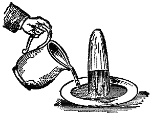
If this blue solution were combustible, and we put a wick at the top of the salt, it would burn as it arrived in the wick. It is a most curious thing to watch this sort of action going on, and to notice how singular some of the circumstances about it are.
When you wash your hands you take a towel to wipe the water off; and it is by that kind of wetting — that kind of attraction which makes the towel become wet with water — that the wick is made wet with the tallow. I have known careless boys and girls (indeed I have known it happen to careful people too) who, having washed their hands and dried them, have thrown the towel over the side of the basin, and before long it has drawn all the water out of the basin and delivered it onto the floor — because it happened to be thrown over the edge in a way that made it serve as a siphon.
So that you can see better how these substances act on one another, here is a vessel made of wire gauze, filled with water; and you may compare it to the cotton in one respect, or to a piece of calico in the other. In fact wicks are sometimes made of a sort of wire gauze. You will notice that this vessel is a porous thing: if I pour a little water on the top, it runs out of the bottom. You would be puzzled for a good while if I asked you what state this vessel is in, what is inside it, and why it stays there. The vessel is full of water — and yet, as you see, water goes in and runs out as though it were empty. To prove it to you I have only to empty it. The reason is this: the wire, once wetted, stays wet, and the meshes are so small that the liquid is attracted so strongly from one side to the other that it stays in the vessel although the vessel is porous. In just the same way the particles of melted tallow climb the cotton and reach the top; other particles follow by their mutual attraction for one another; and as they reach the flame they are gradually burned.
Editor's note: The late Duke of Sussex was, we believe, the first to show that a prawn might be washed on this principle. If the tail, after the fan part has been pulled off, is placed in a tumbler of water and the head allowed to hang over the outside, the water will be sucked up the tail by capillary attraction and will go on running out through the head until the water in the glass has sunk so low that the tail no longer dips into it.
Here is another application of the same principle. You see this bit of cane. I have seen boys about the streets, very anxious to look like men, take a piece of cane and light it and smoke it in imitation of a cigar. They can do this because the cane is permeable in one direction, and because of its capillarity. If I set this piece of cane in a plate containing some camphine — which is much like paraffin in its general character — this liquid will rise through the cane exactly as the blue liquid rose through the salt. There being no pores at the sides, the liquid cannot go that way but must travel along its length. The liquid is already at the top of the cane; and now I can light it and make it serve as a candle. It has risen by the capillary attraction of the piece of cane, just as it does through the cotton in a candle.
Now, the only reason a candle does not burn all the way down the side of the wick is that the melted tallow puts the flame out. You know that a candle turned upside down, so that the fuel runs onto the wick, will be extinguished. The reason is that the flame has not had time to make the fuel hot enough to burn, as it does up above, where it is carried into the wick in small quantities and gets the whole effect of the heat.
There is another condition you must learn about the candle, without which you could not fully understand the science of it, and that is the vaporous condition of the fuel. To let you see it, let me show you a very pretty but very commonplace experiment. If you blow a candle out cleverly, you will see the vapour rise from it. You have often smelt the vapour of a blown-out candle, I know — and a very bad smell it is; but if you blow it out cleverly you will be able to see quite well the vapour into which this solid matter is turned. I shall blow out one of these candles in such a way as not to disturb the air around it with the continuing push of my breath. And now, if I hold a lighted taper two or three inches from the wick, you will see a train of fire travel through the air until it reaches the candle. I have to be quick and ready about it, because if I give the vapour time to cool it condenses into a liquid or a solid, or else the stream of combustible matter gets disturbed.
Now, as to the shape or form of the flame. It matters a great deal to us to know about the condition the matter of the candle finally takes at the top of the wick — where you get such beauty and brightness as nothing but burning, nothing but flame, can produce.
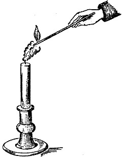
You have the glittering beauty of gold and silver, and the still higher lustre of jewels like the ruby and the diamond; but none of these rivals the brilliance and beauty of flame. What diamond can shine like flame? It owes its lustre at night to the very flame shining on it. The flame shines in the darkness; the light the diamond has is nothing at all until the flame shines upon it, and then it is brilliant again. The candle alone shines by itself and for itself — or for those who arranged its materials.
Now let us look a little at the form of the flame as you see it under the glass shade. It is steady and even, and its general shape is the one drawn in the diagram, varying with disturbances of the air and also with the size of the candle. It is a bright oblong — brighter at the top than towards the bottom — with the wick up the middle, and besides the wick certain darker parts low down, where the burning is not as complete as it is higher up.
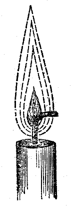
I have here a drawing sketched many years ago by Hooke, when he was making his investigations. It is a drawing of the flame of a lamp, but it applies to the flame of a candle. The cup of the candle is the vessel or lamp, the melted spermaceti is the oil, and the wick is common to both. On that he sets this little flame, and then he draws what is perfectly true — a certain quantity of matter rising about it which you do not see, and which, if you have not been here before or are not familiar with the subject, you would not know about. He has drawn the parts of the surrounding atmosphere which are essential to the flame and are always present with it.
There is a current formed which draws the flame out — for the flame you see is really drawn out by the current, and drawn upward to a great height, just as Hooke has shown you here by that prolongation of the current in his diagram. You can see this for yourself by taking a lighted candle and putting it in the sun so that its shadow falls on a piece of paper. How remarkable it is that the thing which is light enough to cast shadows of other objects can be made to throw its own shadow on a piece of white paper or card — so that you can actually see, streaming round the flame, something which is not part of the flame but is rising and drawing the flame upwards. Now I am going to imitate sunlight by applying the voltaic battery — an electric battery — to the electric lamp. There you see our sun and its great brilliance; and by putting a candle between it and the screen we get the shadow of the flame.
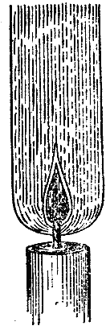
You can see the shadow of the candle and of the wick; then a darkish part, as in the diagram; and then a part which is more distinct. Curiously enough, what shows in the shadow as the darkest part of the flame is in reality the brightest part. And here you see, streaming upwards, the ascending current of hot air that Hooke drew, which draws the flame out, supplies it with air, and cools the sides of the cup of melted fuel.
Let me give you a further illustration, to show you how a flame goes up or down according to the current. I have a flame here — not a candle flame, but by this time you can no doubt generalise well enough to compare one thing with another. What I am about to do is to change the ascending current that carries the flame upwards into a descending one, and I can do it easily with the little apparatus in front of me. The flame, as I said, is not a candle flame; it is produced by alcohol, so that it shall not smoke too much. I shall also colour the flame with another substance so that you can follow its course, since with the spirit alone you could hardly see well enough to trace its direction. Lighting this spirits of wine — that is, ethanol — we get a flame; and you see that when it is held in the air it naturally goes upwards.
Editor's note: The alcohol had chloride of copper dissolved in it: this produces a beautiful green flame.
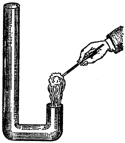
You now understand easily enough why flames go up in ordinary circumstances: it is because of the draught of air by which the burning is kept going. But now, by blowing the flame down, you see I can make it go downwards into this little chimney — the direction of the current being changed. Before we have finished this course of lectures we shall show you a lamp in which the flame goes up and the smoke goes down, or the flame goes down and the smoke goes up. You see, then, that we have the power in this way of turning the flame in different directions.
There are some other points I must put before you now. Many of the flames you see here vary a great deal in shape according to the currents of air blowing around them in different directions. But we can, if we like, make flames that will hold still like fixtures, and we can photograph them — indeed, we have to photograph them — so that they become fixed for us, if we want to find out everything about them.
That, however, is not the only thing I want to mention. If I take a flame that is large enough, it does not keep that even, uniform shape but breaks out with a power of life that is quite wonderful. I am going to use another kind of fuel, but one which fairly and truly represents the wax or tallow of a candle. Here is a large ball of cotton which will serve as a wick. Now that I have soaked it in spirit and put a light to it — in what way does it differ from an ordinary candle? Why, it differs very much in one respect: there is a vivacity and a power about it, a beauty and a life entirely different from the light a candle gives. You see those fine tongues of flame rising up. You have the same general arrangement of the mass of flame from below upwards; but in addition you have this remarkable breaking out into tongues, which you do not see in the case of a candle.
Now why is this? I must explain it to you, because once you understand it perfectly you will be able to follow me better in what I have to say later on. I expect some of you here have made the experiment I am about to show you for yourselves. Am I right in supposing that somebody here has played snapdragon? I do not know a more beautiful illustration of the science of flame, so far as a certain part of its history goes, than the game of snapdragon.
First, here is the dish. And let me say that when you play snapdragon properly you ought to have the dish well warmed; you ought to have warm raisins and warm brandy too, which I am afraid I have not got. When you have put the spirit into the dish you have the cup and the fuel — and are not the raisins acting as wicks? I now throw the raisins into the dish and light the spirit, and you see those beautiful tongues of flame I was talking about. You have the air creeping in over the edge of the dish and forming these tongues. Why? Because, through the force of the current and the irregular action of the flame, it cannot flow in one uniform stream. The air flows in so irregularly that what would otherwise be a single image is broken up into a variety of shapes, and each of these little tongues has an independent existence of its own. Indeed, I might say you have here a multitude of independent candles.
You must not imagine, because you see these tongues all at once, that the flame really has this particular shape. A flame of that shape never exists at any one moment. A body of flame like the one you just saw rising from the ball is never the shape it appears to you to be. It consists of a multitude of different shapes, following one another so fast that the eye can only take them all in at once. Some time ago I deliberately analysed a flame of that general character, and the diagram shows you the different parts it is made of. They do not occur all at once; it is only because we see these shapes in such rapid succession that they seem to us to exist all at the same time.
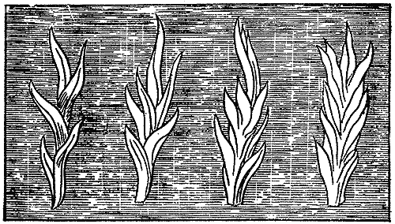
It is too bad that we have got no further than my game of snapdragon; but we must not on any account keep you past your time. It will be a lesson to me in future to hold you more strictly to the science of the thing, instead of taking up so much of your time with these illustrations.
Last time we met we were occupied with the general character and arrangement of the liquid part of a candle, and with the way that liquid gets to the place of burning. You see that when we have a candle burning fairly in a steady, regular atmosphere, it takes a shape something like the one in the diagram, and looks quite uniform, though very curious in its character.
And now I must ask your attention to the means by which we can find out what happens in any particular part of the flame — why it happens, what it does in happening, and where, after all, the whole candle goes to. Because, as you know very well, a candle brought before us and burned disappears, if it burns properly, without leaving the least trace of dirt in the candlestick; and that is a very curious circumstance.
In order to examine this candle carefully, then, I have set up certain apparatus, and you will see the use of it as I go on. Here is a candle. I am about to put the end of this glass tube into the middle of the flame — into the part which old Hooke drew as being rather dark, and which you can see at any time if you look at a candle carefully without blowing it about. We will examine that dark part first.
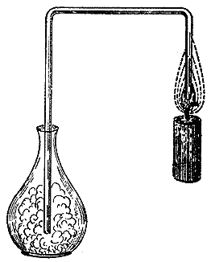
Now, I take this bent glass tube and put one end into that part of the flame; and you see at once that something is coming out of the flame at the other end of the tube. If I put a flask there and leave it a little while, you will see that something from the middle of the flame is gradually drawn off, goes through the tube into the flask, and there behaves very differently from the way it behaves in the open air. It not only escapes from the end of the tube but falls to the bottom of the flask like a heavy substance — which indeed it is. We find that this is the wax of the candle turned into a vaporous fluid — not a gas.
(You must learn the difference between a gas and a vapour: a gas stays permanent, a vapour is something that will condense.) If you blow out a candle you notice a very nasty smell, and it comes from the condensing of this vapour.
That is very different from what you have outside the flame; and to make it clearer to you I am going to produce, and set fire to, a larger quantity of this vapour. What we have on a small scale in a candle, we must, as scientists, produce on a larger scale if need be, so that we can examine the different parts. Mr. Anderson will give me a source of heat, and I will show you what that vapour is. Here is some wax in a glass flask, and I am going to make it hot — as the inside of that candle flame is hot, and the matter round the wick is hot. [The lecturer placed some wax in a glass flask and heated it over a lamp.]
Now I dare say that is hot enough. You see the wax I put in has become liquid, and there is a little smoke coming off it. We shall very soon have the vapour rising. I will make it hotter still — and now we get more of it, so much that I can actually pour the vapour out of the flask into that basin and set fire to it there.
This, then, is exactly the same kind of vapour as we have in the middle of the candle. And to make sure of it, let us test whether we have not got a real combustible vapour here in this flask, taken out of the middle of the candle. [Taking the flask into which the tube from the candle led, and putting in a lighted taper.] See how it burns. This is the vapour from the middle of the candle, produced by the candle's own heat; and that is one of the first things you have to think about in following the progress of the wax through its burning, and the changes it goes through.
I will set another tube carefully in the flame, and I should not wonder if, with a little care, we can get that vapour to travel along the tube to the far end, where we will light it and get the actual flame of the candle at a place some distance away from it. Now look at that. Is that not a very pretty experiment? People talk about laying on gas — why, we can lay on a candle! And you see from this that there are plainly two different actions going on: one the making of the vapour, the other the burning of it — and each takes place in its own particular part of the candle.
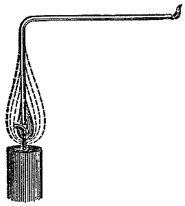
I shall get no vapour at all from the part that has already burnt. If I raise the tube (Figure 7) to the upper part of the flame, then as soon as the vapour has been swept out, what comes away is no longer combustible: it is already burned. Burned how? Burned like this. In the middle of the flame, where the wick is, there is this combustible vapour. On the outside of the flame is the air, which we shall find is necessary for the burning of the candle. Between the two an intense chemical action takes place, in which the air and the fuel act on one another; and at the very moment we get light, the vapour inside is destroyed.
If you examine where the heat of a candle is, you will find it very curiously arranged. Suppose I take this candle and hold a piece of paper close down on the flame — where is the heat of that flame? Do you not see that it is not on the inside? It is in a ring, exactly where I told you the chemical action was. Even with my rough way of doing the experiment, if there is not too much disturbance there will always be a ring. This is a good experiment for you to make at home. Take a strip of paper, have the air in the room quiet, and lay the paper right across the middle of the flame (I must not talk while I do the experiment) — and you will find it is burnt in two places, and hardly at all in the middle. Once you have tried it a couple of times and got it neat, you will be very interested to see where the heat is, and to find that it is where the air and the fuel come together.
This is most important to us as we go on with our subject. Air is absolutely necessary for burning; and, what is more, I must have you understand that *fresh* air is necessary, or else our reasoning and our experiments will be faulty. Here is a jar of air. I put it over a candle, and at first the candle burns very nicely in it, showing that what I have said is true. But there will soon be a change. See how the flame draws upwards, then fades, and at last goes out.
And why does it go out? Not simply because it wants air, for the jar is as full now as it was before; but because it wants pure, fresh air. The jar is full of air, partly changed and partly unchanged; but it does not hold enough of the fresh air that a candle needs for burning.
These are all points that we, as young chemists, have to gather up; and if we look a little more closely into this kind of action we shall find some steps of reasoning that are extremely interesting. For instance, here is the oil lamp I showed you, an excellent lamp for our experiments — the old Argand lamp. I now make it behave like a candle [obstructing the passage of air into the centre of the flame]. There is the cotton; there is the oil rising up it; and there is the conical flame. It burns poorly, because the air is partly held back. I have let no air get to it except round the outside of the flame, and it does not burn well. I cannot let in more air from the outside, because the wick is large. But if, as Argand did so cleverly, I open a passage into the middle of the flame and let air come in there, you will see how much more beautifully it burns. And if I shut the air off, look how it smokes.
Why? We now have some very interesting points to study. We have the case of a candle burning; we have the case of a candle put out for want of air; and we now have the case of imperfect burning. This last is so interesting to us that I want you to understand it as thoroughly as you understand a candle burning in the best possible way.
I will make a great flame now, because we want the largest illustrations we can get. Here is a larger wick [burning turpentine on a ball of cotton]. All these things are the same as candles, after all. If we have larger wicks we must have a larger supply of air, or our burning will be less complete. Look at this black substance going up into the air — there is a steady stream of it. I have arranged means to carry off the imperfectly burned part, so that it shall not annoy you. Look at the soot flying off the flame. See what imperfect burning it is, because it cannot get enough air.
What is happening, then? Certain things necessary to the burning of a candle are absent, and very bad results follow. But we can see what happens to a candle when it burns in a pure and proper state of air. When I showed you that charring by the ring of flame on one side of the paper, I might also have shown you, by turning to the other side, that the burning of a candle produces the same kind of soot — charcoal, or carbon.
But before I show you that, let me explain something that is quite necessary for our purpose. Though I take a candle and give you its burning, as a general result, in the form of a flame, we must ask whether burning is always in this condition, or whether there are other conditions of flame. We shall soon discover that there are, and that they matter a great deal to us.
Perhaps the best way to illustrate this point, for us young people, is by showing a strong contrast. Here is a little gunpowder. You know gunpowder burns with a flame — we may fairly call it flame. It contains carbon and other materials which together make it burn with a flame. And here is some powdered iron, or iron filings. I intend to burn these two things together, and I have a little mortar in which I shall mix them.
(Before I go into these experiments, let me hope that none of you will do any harm by trying to repeat them for fun's sake. All these things may be used quite properly if you take care; but without care, a great deal of mischief will be done.)
Well then: here is a little gunpowder, which I put at the bottom of this little wooden vessel, and I mix the iron filings in with it. My object is to have the gunpowder set fire to the filings and burn them in the air, and so show the difference between substances that burn with a flame and substances that do not. Here is the mixture; and when I set fire to it, watch the burning, and you will see that it is of two kinds. You will see the gunpowder burning with a flame, and the filings thrown up. You will see them burning too, but without producing any flame. Each will burn in its own way. [The lecturer then ignited the mixture.]
There is the gunpowder, which burns with a flame; and there are the filings — they burn with a different kind of combustion. You see, then, these two great distinctions. And on these differences depend all the usefulness and all the beauty of the flame we use for the purpose of giving light. When we use oil, or gas, or a candle for lighting, their fitness depends entirely on these different kinds of burning.
There are such curious conditions of flame that it takes some cleverness and some nicety of judgement to tell one kind of burning from another. Here, for instance, is a powder which is very combustible, consisting, as you see, of separate little particles. It is called lycopodium, and every one of these particles can produce a vapour and produce its own flame; but to watch them burning you would imagine it was all one flame. I will set fire to a quantity now, and you will see the effect.
We saw a cloud of flame, apparently all in one body; but that rushing noise [referring to the sound made by the burning] was proof that the burning was not continuous or regular. This is the lightning of the pantomimes, and a very good imitation of it. [The experiment was repeated twice, by blowing lycopodium from a glass tube through a spirit flame.] This is not an example of burning like that of the iron filings I have been speaking of — and to those we must now return.
Editor's note: Lycopodium is a yellowish powder found in the fruit of the club moss (Lycopodium clavatum). It is used in fireworks.
Suppose I take a candle and examine the part of it that looks brightest to our eyes. There I get these black particles, which you have already seen given off from the flame many times, and which I am now going to draw off in a different way. I will take this candle and clear away the guttering caused by the currents of air; and if I now set a glass tube so that it just dips into this luminous part — as in our first experiment, only higher up — you see the result. Instead of the white vapour you had before, you now get a black vapour. There it goes, as black as ink. It is certainly very different from the white vapour; and when we put a light to it, we find it does not burn but puts the light out.
These particles, as I said before, are simply the smoke of the candle; and that brings to mind the old occupation Dean Swift recommended to servants for their amusement — writing on the ceiling of a room with a candle. But what is that black substance? Why, it is the same carbon that exists in the candle. How does it get out of the candle? It plainly existed in the candle, or else we should not have it here.
Now I want you to follow me in this. You would hardly think that all those substances flying about London in the form of soot and blacks are the very beauty and life of the flame, and are burned in it just as those iron filings were burned here. Here is a piece of wire gauze, which will not let the flame through it; and I think you will see almost at once that when I bring it low enough to touch the part of the flame that is otherwise so bright, it quells and quenches it immediately, and lets a volume of smoke rise up.
I want you to follow me on this point: that whenever a substance burns without taking the vaporous state — as the iron filings burnt in the flame of the gunpowder — then whether it becomes liquid or stays solid, it becomes exceedingly luminous. I have taken three or four examples apart from the candle on purpose to illustrate this, because what I have to say applies to all substances, whether they burn or not: they are exceedingly bright if they keep their solid state, and it is to the presence of solid particles in the candle flame that the flame owes its brilliance.
Here is a platinum wire, a body which is not changed by heat. If I heat it in this flame, see how exceedingly luminous it becomes. I will make the flame dim, so that it gives only a little light, and yet you will see that the heat it can give that platinum wire — though far less than the heat it has itself — is able to raise the wire to a far higher state of brilliance.
This flame has carbon in it; but I will take one that has none. In that vessel there is a material, a kind of fuel — a vapour, or a gas, whichever you like to call it — with no solid particles in it. I take it because it is an example of flame burning without any solid matter whatever. And if I now put this solid substance into it, you see what an intense heat it has, and how brightly it makes the solid body glow. This is the pipe through which we bring that particular gas, which we call hydrogen, and which you shall know all about next time we meet. And here is a substance called oxygen, by means of which the hydrogen can burn. Although their mixture produces far greater heat than you can get from a candle, there is very little light.
If, however, I take a solid substance and put it in, we get an intense light. If I take a piece of lime — a substance which will not burn and will not turn to vapour with the heat, and which therefore stays solid and stays hot — you will soon see what happens about its glowing. I have here a most intense heat, produced by hydrogen burning in contact with oxygen; but as yet there is very little light. That is not for want of heat but for want of particles that can keep their solid state. Now watch when I hold this piece of lime in the flame of the hydrogen as it burns in the oxygen — see how it glows! This is the glorious limelight, which rivals the voltaic light and is almost equal to sunlight.
Here is a piece of carbon, or charcoal, which will burn and give us light in exactly the same way as if it were burnt as part of a candle. The heat in the flame of a candle breaks up the vapour of the wax and sets the carbon particles free; they rise up heated and glowing, as this is glowing now, and then pass into the air. But the particles, once burnt, never leave a candle in the form of carbon. They go off into the air as a perfectly invisible substance, which we shall learn about later on.
Editor's note: Bunsen has calculated that the temperature of the oxyhydrogen blowpipe is 8061° Centigrade. Hydrogen burning in air has a temperature of 3259° C., and coal gas in air, 2350° C.
Is it not beautiful to think that such a process is going on, and that so dirty a thing as charcoal can become so incandescent? You see it comes to this: all bright flames contain these solid particles. Everything that burns and produces solid particles — either while it is burning, as in the candle, or immediately after being burnt, as with the gunpowder and iron filings — all of these give us this glorious and beautiful light.
I will give you a few illustrations. Here is a piece of phosphorus, which burns with a bright flame. Very well; we may conclude that phosphorus produces these solid particles, either at the moment of burning or afterwards. Here is the phosphorus lit, and I cover it with this glass to keep in what is produced. What is all that smoke? That smoke consists of the very particles produced by the burning of the phosphorus.
Here again are two substances. This is chlorate of potash, and this other is sulphuret of antimony. I shall mix them a little, and then they can be set burning in a number of ways. I shall touch them with a drop of sulphuric acid, to give you an illustration of chemical action, and they will burn instantly. [The lecturer then ignited the mixture by means of sulphuric acid.] Now, from the look of things, you can judge for yourselves whether they produce solid matter in burning. I have given you the train of reasoning that lets you say whether they do or not — for what is this bright flame but the solid particles passing off?
Editor's note: The following is the action of the sulphuric acid in inflaming the mixture of sulphuret of antimony and chlorate of potassa. A portion of the latter is decomposed by the sulphuric acid into oxide of chlorine, bisulphate of potassa and perchlorate of potassa. The oxide of chlorine inflames the sulphuret of antimony, which is a combustible body, and the whole mass instantly bursts into flame.
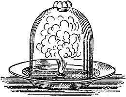
Mr. Anderson has a very hot crucible in the furnace. I am about to throw some zinc filings into it, and they will burn with a flame like gunpowder. I make this experiment because you can make it well at home. Now, I want you to see the result of the burning of this zinc. Here it is burning — burning beautifully, I may say, like a candle. But what is all that smoke, and what are those little clouds of wool which will come to you if you cannot come to them, and make themselves felt in the form of what used to be called philosophic wool? We shall also have a quantity of that woolly matter left in the crucible.
But I will take another piece of this same zinc and make the experiment a little closer to home, so to speak. The same thing will happen here. Here is the piece of zinc; there [pointing to a jet of hydrogen] is the furnace; and we will set to work and try to burn the metal. It glows, you see: there is the burning, and there is the white substance it burns into. So if I take that flame of hydrogen as the representative of a candle, and show you a substance like zinc burning in it, you will see that this substance glowed only while the burning was going on — while it was kept hot. And if I take a flame of hydrogen and put this white substance from the zinc into it, look how beautifully it glows, and just because it is a solid substance.
Now I will take a flame like the one I had a moment ago and set the carbon particles free from it. Here is some camphine, which burns with a smoke; but if I send these particles of smoke through this pipe into the hydrogen flame, you will see them burn and become luminous, because we heat them a second time. There they are. Those are the particles of carbon lit up a second time. They are the particles you can easily see by holding a piece of paper behind them, and which, while they are in the flame, are set glowing by the heat, and, being so lit, produce this brightness. When the particles are not separated out, you get no brightness.
The flame of coal gas owes its brightness to the separating out, during burning, of these particles of carbon, which are in it just as they are in a candle. I can alter that arrangement very quickly. Here, for instance, is a bright flame of gas. Suppose I add enough air to the flame to make it all burn before those particles are set free — then I shall not have this brightness. And I can do it in this way. If I place this wire-gauze cap over the jet, as you see, and light the gas above it, it burns with a non-luminous flame, because it has plenty of air mixed with it before it burns. And if I raise the gauze, you see it does not burn below. There is plenty of carbon in the gas; but because the air can get to it and mix with it before it burns, you see how pale and blue the flame is. And if I blow on a bright gas flame, so as to consume all this carbon before it is heated to the glowing point, it will burn blue as well. [The lecturer illustrated his remarks by blowing on the gas light.] The only reason I do not get the same bright light when I blow on the flame is that the carbon meets enough air to burn it before it gets separated out in the flame in a free state. The difference is due entirely to the solid particles not being set free before the gas is burnt.
Editor's note: The "air-burner," which is of such value in the laboratory, owes its advantage to this principle. It consists of a cylindrical metal chimney covered at the top with a piece of rather coarse iron wire gauze. This is supported over an argand burner in such a way that the gas may mix in the chimney with enough air to burn the carbon and hydrogen simultaneously, so that there is no separation of carbon in the flame and no consequent deposit of soot. The flame, being unable to pass through the wire gauze, burns in a steady, nearly invisible manner above.
You will have noticed that there are certain products resulting from the burning of a candle, and that one part of these products may be considered charcoal, or soot; and that this charcoal, when burnt afterwards, produces some other product. It concerns us very much now to find out what that other product is. We have shown that something is going away; and I want you to understand how much is going up into the air. For that purpose we will have burning on a slightly larger scale.
Heated air rises from that candle, and two or three experiments will show you the ascending current. But to give you a notion of the quantity of matter that goes up this way, I will try an experiment in which I shall attempt to imprison some of the products of this burning. For this purpose I have here what boys call a fire balloon. I use it simply as a sort of measure of the result of the burning we are considering; and I am going to make a flame in the easiest and simplest way that suits my present purpose. This plate shall be the "cup" of the candle, let us say; this spirit shall be our fuel; and I am about to put this chimney over it, because that is better than letting things go at random.
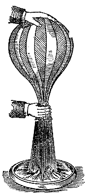
Mr. Anderson will now light the fuel, and here at the top we shall get the results of the burning. What we get at the top of that tube is, generally speaking, exactly the same as what you get from the burning of a candle; but we do not get a luminous flame here, because we are using a substance that is poor in carbon.
I am going to put this balloon — not into action, because that is not my object — but to show you the effect produced by those products which rise from the candle, as they rise here from the furnace. [The balloon was held over the chimney, and immediately began to fill.] You see how ready it is to go up; but we must not let it, because it might come against those upper gas lights, and that would be very inconvenient. [The upper gas lights were turned out, at the lecturer's request, and the balloon was allowed to ascend.]
Does that not show you what a large bulk of matter is being given off? Now, all the products of that candle are going through this tube [placing a large glass tube over a candle], and you will see presently that the tube becomes quite opaque. Suppose I take another candle, put it under a jar, and set a light on the other side, just to show you what is going on. You see the sides of the jar go cloudy and the light begins to burn feebly. It is the products, you see, that make the light so dim, and the same thing makes the sides of the jar so opaque.
If you go home and take a spoon that has been out in the cold air and hold it over a candle — not so as to soot it — you will find it becomes dim, just as that jar is dim. If you can get a silver dish, or something of that sort, you will make the experiment better still. And now, just to carry your thoughts forward to the time when we next meet, let me tell you that it is water which causes the dimness; and when we meet again I will show you that we can make it take the form of a liquid without any difficulty.
I dare say you remember that when we parted we had just mentioned the word "products" from the candle. When a candle burns we found that we could, by careful adjustment, get various products from it. There was one substance which we did not get when the candle was burning properly, and that was charcoal, or smoke. And there was another substance that went up from the flame which did not appear as smoke but took some other form, and made part of that general current which rises from the candle, becomes invisible, and escapes. There were other products to mention as well. You remember that in that rising current beginning at the candle, we found one part could be condensed against a cold spoon, or a clean plate, or any other cold thing, and another part could not.
We will take the condensable part first and examine it; and, strange to say, we find that this part of the product is simply water — nothing but water. Last time I mentioned it only in passing, saying that water was produced among the condensable products of the candle. But today I want to draw your attention to water, so that we may examine it carefully, both in relation to this subject and with respect to its general existence over the surface of the globe.
Having already set up an experiment for condensing water from the products of the candle, my next task is to show you this water. Perhaps the best way of showing its presence to so many people at once is to exhibit a very visible action of water and then apply that test to what has collected as a drop at the bottom of that vessel. Here I have a chemical substance discovered by Sir Humphry Davy, which acts very energetically on water, and which I shall use as a test for the presence of water. If I take a little piece of it — it is called potassium, from potash — and throw it into that basin, you see how it shows that water is present, lighting up and floating about, burning with a violent flame.
Now I am going to take away the candle that has been burning beneath the vessel of ice and salt, and you see a drop of water — a condensed product of the candle — hanging from the underside of the dish.
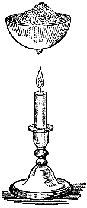
I will show you that potassium acts on that drop just as it did on the water in the basin in the experiment we have just tried. See, it takes fire and burns in exactly the same way. I will take another drop on this glass slab, and when I put the potassium on it, you see at once, from its taking fire, that there is water present. And that water was produced by the candle.
In the same way, if I put this spirit lamp under that jar, you will soon see the jar go damp with the dew deposited on it — that dew being the result of the burning; and I have no doubt you will shortly see, from the drops of water falling onto the paper below, that a good deal of water is produced by the burning of the lamp. I will leave it there, and you can see afterwards how much water has collected. So, too, if I take a gas lamp and put any cooling arrangement over it, I shall get water — water being likewise produced by the burning of gas.
Here in this bottle is a quantity of water — perfectly pure distilled water, produced by the burning of a gas lamp — in no respect different from the water you distil from the river, or the ocean, or a spring; exactly the same thing. Water is one individual thing: it never changes. We can add to it by careful adjustment for a while, or we can take it apart and get other things out of it; but water, as water, always remains the same, whether solid, liquid or gaseous. Here again [holding another bottle] is some water produced by the burning of an oil lamp. A pint of oil, burnt fairly and properly, produces rather more than a pint of water. And here is some water produced by a rather long experiment from a wax candle. So we can go on with almost every combustible substance, and find that if it burns with a flame, as a candle does, it produces water.
You can make these experiments for yourselves. The head of a poker is a very good thing to try; if it stays cold long enough over the candle you may get water condensed on it in drops. Or a spoon, or a ladle, or anything else will do, provided it is clean and can carry the heat away and so condense the water.
And now — to go into the history of this wonderful production of water from combustible things, and by burning — I must first tell you that this water can exist in different conditions. You may already know all its forms, but they still need a little attention from us for the moment, so that we can see how water, while it goes through its Protean changes, is entirely and absolutely the same thing, whether it comes from a candle by burning or from the rivers and the ocean.
First of all, water at its coldest is ice. Now we scientists — and I hope I may class you and myself together here — speak of water as water whether it is in the solid, the liquid or the gaseous state; chemically we call it water. Water is a thing compounded of two substances, one of which we have got from the candle and the other of which we shall find elsewhere.
Water may occur as ice, and you have had excellent opportunities lately of seeing it. Ice changes back into water when the temperature is raised — and last Sunday we had a strong instance of that change, in the sad catastrophe that happened in our own house, as it did in the houses of many of our friends. Water also changes into steam when it is warmed enough. The water we have before us here is in its densest state; and although it changes in weight, in condition, in form and in many other qualities, it is still water. Whether we turn it into ice by cooling or into steam by heat, it increases in volume — in the one case very strangely and powerfully, in the other very largely and wonderfully.
For instance, I will now take this tin cylinder and pour a little water into it; and seeing how much I pour in, you can easily estimate for yourselves how high it will stand in the vessel — it will cover the bottom to about two inches. I am now going to turn the water into steam, in order to show you the different volumes that water occupies in its two states.
Editor's note: Water is in its densest state at a temperature of 39.1° Fahrenheit.
Let us now take the case of water changing into ice. We can do that by cooling it in a mixture of salt and pounded ice, and I shall do so to show you the expansion of water into something of larger bulk when it is changed that way. These bottles [holding one] are made of strong cast iron, very strong and very thick — a third of an inch thick, I suppose. They have been carefully filled with water so as to exclude all air, and then screwed down tight. We shall see that when we freeze the water in these iron vessels they will not be able to hold the ice, and the expansion inside them will break them in pieces, as these [pointing to some fragments] are broken, which were bottles of exactly the same kind. I am about to put these two bottles into that mixture of ice and salt, to show you that when water becomes ice it changes in volume in this extraordinary way.
Editor's note: A mixture of salt and pounded ice reduces the temperature from 32° F. to zero, the ice at the same time becoming fluid.
Meanwhile, look at the change that has taken place in the water we applied heat to — it is losing its liquid state. You can tell this by two or three circumstances. I have covered the mouth of this glass flask, in which water is boiling, with a watch glass. Do you see what happens? It rattles away like a chattering valve, because the steam rising from the boiling water pushes the glass up and down and forces its way out, making it clatter. You can easily see that the flask is quite full of steam, or else the steam would not force its way out. And you can see, too, that the flask contains a substance very much larger in bulk than the water, because it fills the whole flask over and over again and goes blowing away into the air — and yet you cannot see any great decrease in the bulk of the water. That shows you how very great the change of bulk is when water becomes steam.
I have put our iron bottles of water into this freezing mixture so that you can see what happens. You will notice that no communication takes place between the water in the bottles and the ice in the outer vessel. But heat will be carried from the one to the other; and if we succeed — we are making our experiment in very great haste — I expect that presently, as soon as the cold has taken possession of the bottles and their contents, you will hear a pop as one bottle or the other bursts. When we come to examine them we shall find their contents are masses of ice, partly enclosed by an iron covering which is too small for them, because ice takes up more room than water.
You know very well that ice floats on water: if a boy falls through a hole into the water, he tries to get back onto the ice to hold him up. Why does the ice float? Think about that, and reason it out. Because the ice is larger than the quantity of water that made it; and therefore the ice is the lighter and the water the heavier.
To return to the action of heat on water. See what a stream of vapour is coming out of this tin vessel! You can tell we must have filled it quite full of steam for it to come out in such quantity. And now, just as we can turn water into steam by heat, we can turn it back into liquid water by applying cold. If we take a glass, or any other cold thing, and hold it over this steam, see how quickly it gets damp with water. It will go on condensing until the glass is warm — it is condensing the water that is now running down its sides.
I have another experiment here to show the condensation of water from a vaporous state back into a liquid, in the same way as the vapour, one of the products of the candle, was condensed against the bottom of the dish and got in the form of water. To show you how truly and thoroughly these changes take place, I will take this tin flask, which is now full of steam, and close the top. We shall see what happens when we make this water, or steam, return to the liquid state by pouring some cold water on the outside. [The lecturer poured cold water over the vessel, and it immediately collapsed.]
You see what has happened. If I had closed the stopper and kept the heat applied, it would have burst the vessel; and yet when the steam returns to the state of water, the vessel collapses, because the condensing of the steam has produced a vacuum inside. I show you these experiments to point out that in all these events there is nothing that changes the water into any other thing — it remains water throughout. So the vessel is obliged to give way and is crushed inwards; just as, in the other case, further heat would have blown it outwards.
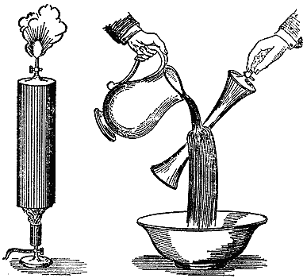
And what do you suppose the bulk of that water is when it takes the vaporous state? You see that cube [pointing to a cubic foot]. Beside it is a cubic inch, exactly the same shape as the cubic foot; and that much water [the cubic inch] is enough to expand into that much [the cubic foot] of steam. Conversely, applying cold will contract that large quantity of steam into this small quantity of water.
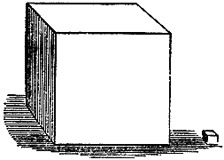
[One of the iron bottles burst at that moment.] Ah! There is one of our bottles gone, and here, you see, is a crack down one side an eighth of an inch wide. [The other now exploded, sending the freezing mixture in all directions.] This other bottle is broken too; although the iron was nearly half an inch thick, the ice has burst it apart.
These changes always take place in water. They do not have to be produced by artificial means — we only use them here because we want to make a small winter round that little bottle instead of a long and severe one. But if you go to Canada, or to the North, you will find the temperature out of doors will do exactly what the freezing mixture has done here.
To return to our quiet science. We shall not in future be deceived by any of the changes that are produced in water. Water is the same everywhere, whether it comes from the ocean or from the flame of a candle.
Where, then, does this water we get from a candle come from? I must anticipate a little and tell you. Part of it evidently comes from the candle; but is it inside the candle beforehand? No. It is not in the candle, and it is not in the air round the candle which the burning requires. It is in neither one nor the other: it comes from their joint action, part from the candle and part from the air. This is what we have now to trace, so that we may thoroughly understand the chemical history of a candle burning on our table. How shall we get at it? I know plenty of ways myself, but I want you to get at it by putting together in your own minds the things I have already told you.
I think you can see a little way into it like this. We had just now the case of a substance which acted on water in the way Sir Humphry Davy showed us, and I am going to recall it to your minds by making the experiment again on that dish. It is a thing we have to handle very carefully, for you see that if I let a little splash of water fall on this mass, it sets fire to part of it; and if there were free access of air it would quickly set the whole thing alight. Now, this is a metal — a beautiful, bright metal — which changes rapidly in the air and, as you know, rapidly in water. I will put a piece on the water, and you see it burns beautifully, making a floating lamp, using the water in place of air.
Again, if we take a few iron filings or turnings and put them in water, we find they too undergo an alteration. They do not change as much as this potassium does, but they change somewhat in the same way: they become rusty, and show an action on the water, though with a different degree of intensity from this beautiful metal. Still, they act on the water in generally the same manner as the potassium does.
I want you to put these different facts together in your minds. I have another metal here [zinc]; and when we examined it with regard to the solid substance produced by its burning, we had a chance of seeing that it burned. I suppose that if I take a little strip of this zinc and hold it over the candle, you will see something halfway, as it were, between the burning of potassium on water and the action of iron — you see there is a sort of combustion. It has burned, leaving a white ash or residue; and here again we find that the metal has a certain amount of action upon water.
Editor's note: Potassium, the metallic basis of potash, was discovered by Sir Humphry Davy in 1807, who succeeded in separating it from potash by means of a powerful voltaic battery. Its great affinity for oxygen causes it to decompose water with the evolution of hydrogen, which takes fire from the heat produced.
By degrees we have learned how to modify the action of these different substances, and how to make them tell us what we want to know. And now, first of all, I take iron. It is a common thing in all chemical reactions where we get a result of this kind to find that heat increases it; and if we want to examine minutely and carefully the action of one body on another, we often have to fall back on the action of heat.
You know, I believe, that iron filings burn beautifully in the air; but I am going to show you an experiment of that kind, because it will impress on you what I am about to say about iron and its action on water. If I take a flame and make it hollow — you know why: because I want to get air to it and into it — and then take a few iron filings and drop them into the flame, you see how well they burn. That combustion is the result of the chemical action going on when we set those particles alight. And so we go on to consider these different effects, and to find out what iron will do when it meets with water. It will tell us the story so beautifully, so gradually and regularly, that I think it will please you very much.
Here I have a furnace with a pipe going through it like an iron gun barrel. I have stuffed that barrel full of bright iron turnings and laid it across the fire to be made red hot. We can either send air through the barrel to come into contact with the iron, or we can send steam from this little boiler at the end of it. Here is a stopcock which shuts the steam off from the barrel until we want to let it in. There is some water in these glass jars, which I have coloured blue so that you can see what happens. Now, you know very well that any steam I might send through that barrel would be condensed if it went through into the water, for you have seen that steam cannot keep its gaseous form if it is cooled down.
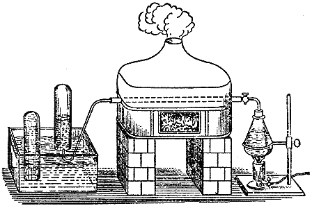
You saw it here [pointing to the tin flask] crushing itself into a small bulk and making the flask that held it collapse. So if I sent steam through that barrel it would be condensed — supposing the barrel were cold. It is therefore heated, for the experiment I am now going to show you.
I am going to send the steam through the barrel a little at a time, and you shall judge for yourselves, when you see it come out at the other end, whether it is still steam. Steam can be condensed into water, and when you lower the temperature of steam you turn it back into liquid water. But I have lowered the temperature of the gas I have collected in this jar, by passing it through water after it came out of the iron barrel — and still it does not change back into water.
I will apply another test to this gas. (I hold the jar upside down, or my substance would escape.) If I now put a light to the mouth of the jar, it lights with a slight noise. That tells you it is not steam. Steam puts a fire out — it does not burn; but you saw that what I had in that jar did burn.
We can get this substance just as well from water produced by the candle flame as from any other source. When it is got by the action of the iron on the watery vapour, it leaves the iron in a state very like the state those filings were in after they were burnt. It makes the iron heavier than it was before. So long as the iron stays in the tube and is heated and cooled again without air or water reaching it, its weight does not change; but after this current of steam has been passed over it, it comes out heavier than before — having taken something out of the steam, and having let something else pass on, which we see here.
And now, as we have another jar full, I will show you something most interesting. It is a combustible gas, and I might simply take this jar and set fire to the contents to show you that it burns; but I mean to show you more than that if I can. It is also a very light substance. Steam will condense; this body will rise in the air and not condense.
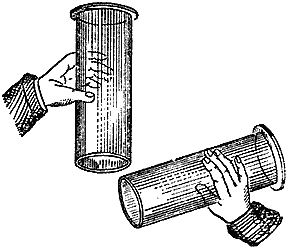
Suppose I take another glass jar with nothing in it but air; if I test it with a taper, I find it contains nothing but air. I will now take this jar full of the gas I am speaking of and treat it as though it were a light body. I will hold both upside down and turn the one up beneath the other. And the jar that held the gas got from the steam — what does it hold now? You will find it now holds nothing but air. But look! Here is the combustible substance [taking the other jar], which I have poured out of the one jar into the other. It still keeps its quality, its condition and its independence, and is all the more worth our attention as one of the products of a candle.
Now, this substance which we have just prepared by the action of iron on steam, or water, we can also get by means of those other things you have already seen acting so well on water. If I take a piece of potassium and make the necessary arrangements, it will produce this gas. And if I take a piece of zinc instead, I find, on examining it very carefully, that the main reason the zinc cannot act on the water continuously as the other metal does is that the result of the water's action wraps the zinc in a sort of protective coat. We have learned in consequence that if we put nothing but zinc and water into our vessel, they do not by themselves give rise to much action, and we get no result.
But suppose I set about dissolving off this varnish, this encumbering substance, which I can do with a little acid. The moment I do, I find the zinc acting on the water exactly as the iron did, only at ordinary temperature. The acid is in no way altered, except in its combination with the oxide of zinc that is produced. I have now poured the acid into the glass, and the effect is as though I were applying heat to make it boil up. Something is coming off the zinc very abundantly, and it is not steam. There is a jar full of it; and you will find that when I hold it upside down I have exactly the same combustible substance in the vessel that I produced in the experiment with the iron barrel. This is what we get out of water — the same substance that is contained in the candle.
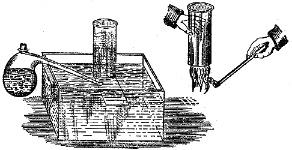
Let us now trace the connection between these two points distinctly. This is hydrogen — a body classed among the things we call elements in chemistry, because we can get nothing else out of them. A candle is not an elementary body, because we can get carbon out of it, and we can get this hydrogen out of it, or at least out of the water it supplies. And this gas has been named hydrogen because it is the element which, joined with another, generates water. (The name is from the Greek: hudor, "water", and gennao, "I generate".)
Mr. Anderson has now managed to get two or three jars of the gas, so we shall have a few experiments to make; and I want to show you the best way of making them. I am not afraid to show you, because I want you to make experiments — if only you will make them with care and attention, and with the agreement of those around you. As we go further into chemistry we are obliged to deal with substances that are rather harmful in the wrong places: the acids, the heat and the combustible things we use might do harm if carelessly employed.
If you want to make hydrogen, you can make it easily from bits of zinc and sulphuric or muriatic acid — muriatic acid being what is now called hydrochloric. Here is what used to be called the "philosopher's candle." It is a little phial with a cork, and a tube or pipe passing through it.
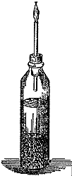
I am now putting a few little pieces of zinc into it. I am going to put this little instrument to a useful purpose in our demonstrations, because I want to show you that you can prepare hydrogen and make experiments with it as you please in your own homes.
Let me tell you here why I am so careful to fill this phial nearly full and yet not quite. I do it because the gas given off, which as you have seen is very combustible, is explosive to a considerable extent when mixed with air, and might do harm if you put a light to the end of that pipe before all the air had been swept out of the space above the water.
I am now going to pour in the sulphuric acid. I have used very little zinc and rather more acid and water, because I want to keep it working for some time; so I take care to adjust the proportions of the ingredients in this way, to get a regular supply — not too quick and not too slow.
Suppose I now take a glass and put it upside down over the end of the tube: because the hydrogen is light, I expect it will stay in that vessel a little while. Let us test what is in our glass and see whether there is hydrogen in it. I think I am safe in saying we have caught some [applying a light]. There it is, you see.
Now I will put a light to the top of the tube. There is the hydrogen burning. There is our philosophical candle. A foolish, feeble sort of a flame, you may say; but it is so hot that hardly any ordinary flame gives out as much heat. It goes on burning steadily; and I am now going to set that flame burning under a certain arrangement, so that we may examine its results and make use of what we learn from them.
Since the candle produces water, and this gas comes out of water, let us see what this gives us by the same process of burning that the candle went through when it burned in the air. For that purpose I am going to put the lamp under this apparatus, in order to condense whatever comes out of the burning inside it. In a short while you will see moisture appearing in the cylinder, and you will get water running down the side; and the water from this hydrogen flame will have absolutely the same effect on all our tests, having been got by the same general process as in the earlier case.
This hydrogen is a very beautiful substance. It is so light that it carries things up: it is far lighter than the atmosphere. I dare say I can show you this by an experiment which, if you are very clever, some of you may even have the skill to repeat. Here is our generator of hydrogen, and here are some soapsuds. I have a rubber tube connected to the hydrogen generator, and on the end of the tube is a tobacco pipe.
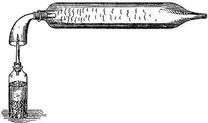
I can put the pipe into the suds and blow bubbles with the hydrogen. You will notice how the bubbles fall downwards when I blow them with my warm breath; now notice the difference when I blow them with hydrogen. [The lecturer here blew bubbles with hydrogen, which rose to the roof of the theatre.] That shows you how light this gas must be, to carry up not merely the ordinary soap bubble but the larger part of a drop hanging from the bottom of it.
I can show its lightness in a better way than this. Bubbles larger than these can be lifted; indeed, in former times balloons used to be filled with this gas. Mr. Anderson will fasten this tube onto our generator, and we shall have a stream of hydrogen here with which to charge this balloon made of collodion. I need not even be very careful to get all the air out, because I know the power of this gas to carry it up. [Two collodion balloons were inflated and sent up, one being held by a string.] Here is another, larger, made of thin membrane, which we will fill and let go. You will see they all stay floating about until the gas escapes.
What, then, are the comparative weights of these substances? I have a table here which will show you the proportions their weights bear to one another. I have taken a pint and a cubic foot as the measures, and set the figures against them. A pint of this hydrogen weighs three-quarters of our smallest weight, a grain, and a cubic foot weighs one-twelfth of an ounce; whereas a pint of water weighs 8,750 grains, and a cubic foot of water weighs almost 1,000 ounces. So you see what a vast difference there is between the weight of a cubic foot of water and a cubic foot of hydrogen.
Hydrogen gives rise to no substance that can become solid, either during its burning or afterwards as a product of it. When it burns it produces water and nothing else; and if we take a cold glass and hold it over the flame, it becomes damp, and you have water produced at once in an appreciable quantity. Nothing is produced by its burning but the same water you have seen the flame of the candle produce. It is important to remember that this hydrogen is the only thing in nature which gives water as the sole product of its burning.
And now we must try to find some further proof of the general character and composition of water; and for that I will keep you a little longer, so that at our next meeting we may be better prepared for the subject. We have the power of arranging that zinc, which you saw acting on water with the help of an acid, in such a way as to make all the power come out at the place where we want it. Behind me I have a voltaic pile, and just at the end of this lecture I am going to show you its character and power, so that you may see what we shall be dealing with when we next meet. I am holding the ends of the wires which bring the power from behind me, and which I shall make act on water.
We have already seen what a power of combustion the potassium has, and the zinc, and the iron filings; but none of them shows such energy as this. [The lecturer here made contact between the two terminal wires of the battery, and a brilliant flash of light was produced.] This light is in fact produced by a forty-zinc power of burning. It is a power I can carry about in my hands, through these wires, as I please — although if I applied it wrongly to myself it would destroy me in an instant, for it is a most intense thing. The power you see put out here while you count five [bringing the poles into contact, and showing the electric light] is equal to the power of several thunderstorms; so great is its force. And so that you may see what intense energy it has, I will take the ends of the wires that carry the power from the battery, and with it I dare say I can burn this iron file. Now, this is a chemical power; and when we next meet I shall apply it to water and show you what results we can produce.
Editor's note: Professor Faraday has calculated that as much electricity is required to decompose one grain of water as there is in a very powerful flash of lightning.
I see you are not tired of the candle yet, or I am sure you would not be interested in the subject the way you are.
When our candle was burning we found that it produced water exactly like the water we have around us; and on examining that water further we found in it that curious body hydrogen — the light substance, some of which is in this jar. We afterwards saw the burning powers of that hydrogen, and that it produced water. And I think I introduced to your notice an apparatus which I said very briefly was an arrangement of chemical force, or power, or energy, so adjusted as to bring its power to us along these wires. I said I would use that force to pull water to pieces and see what else there is in water besides hydrogen; because, you remember, when we passed the water through the iron tube we by no means got back the weight of water we put in as steam, although a very large quantity of gas came off. We have now to see what the other substance is.
So that you may understand the character and use of this instrument, let us make an experiment or two. Let us first put together some substances which we know, and then see what the instrument does to them. Here is some copper (notice the various changes it can go through), and here is some nitric acid; and you will find that this, being a strong chemical agent, acts very powerfully when I add it to the copper. It is sending off a beautiful red vapour now; but as we do not want that vapour, Mr. Anderson will hold it near the chimney for a while, so that we may have the use and the beauty of the experiment without the annoyance.
The copper I have put into the flask will dissolve. It will change the acid and the water into a blue fluid containing copper and other things, and I mean then to show you how this voltaic battery deals with it. In the meantime we will set up another kind of experiment for you to see what power the battery has. Here is a substance which is to us like water — that is to say, it contains bodies we do not yet know about, as water contains a body we do not yet know about.
I will put this solution of a salt on paper, spread it about, apply the power of the battery to it, and see what happens. Three or four important things will happen which we shall take advantage of. I lay this wetted paper on a sheet of tinfoil, which is convenient for keeping everything clean and for applying the power to advantage. And the solution, you see, is not affected at all by being put on the paper or the tinfoil, nor by anything else I have brought into contact with it so far — so it is free for us to use as regards that instrument.
But first let us make sure our instrument is in order. Here are our wires. Let us see whether it is in the state it was in last time. We can soon tell. So far, when I bring them together we have no power, because the conveyers — what we call the electrodes, the passages or ways for the electricity — are blocked. But now Mr. Anderson, by that [referring to a sudden flash at the ends of the wires], has sent me a telegram to say it is ready.
Before I begin our experiment I will get Mr. Anderson to break contact again at the battery behind me, and we will lay a platinum wire across to connect the poles; and if I find I can make a fair length of this wire glow, we shall be safe in our experiment. Now you will see the power. [The connection was established, and the wire between became red hot.] There is the power running beautifully through the wire, which I have made thin on purpose to show you that we have these powerful forces at command. And now, having that power, we will go on with it to the examination of water.
Editor's note: A solution of acetate of lead submitted to the action of the voltaic current yields lead at the negative pole and brown peroxide of lead at the positive pole. A solution of nitrate of silver, under the same circumstances, yields silver at the negative pole and peroxide of silver at the positive pole.
I have two pieces of platinum here; and if I lay them down on this piece of paper [the moistened paper on the tinfoil], you will see no action. If I take them up, there is no change you can see; the arrangement remains just as it was before. But now see what happens. If I take these two poles and put one or the other of them down separately on the platinum plates, they do nothing for me — both are perfectly without action. But if I let them both be in contact at the same moment, see what happens [a brown spot appeared under each pole of the battery]. Look at the effect: see how I have pulled something apart from the white — something brown. And I have no doubt that if I arranged it thus, and put one of the poles to the tinfoil on the other side of the paper — why, I get such a beautiful action on the paper that I am going to see whether I cannot write with it. A telegram, if you please. [The lecturer here traced the word "juvenile" on the paper with one of the terminal wires.] See there how beautifully we can get our results!
You see we have drawn something out of this solution which we did not know about before. Let us now take that flask from Mr. Anderson's hands and see what we can draw out of it. This, you know, is a liquid we have just made up from copper and nitric acid while our other experiments were going on; and though I am making this experiment in great haste and may bungle it a little, I would rather let you see me do it than prepare it beforehand.
Now, see what happens. These two platinum plates are the two ends of this apparatus — or I will make them so in a moment — and I am about to put them into that solution just as we did on the paper a moment ago. It makes no difference to us whether the solution is on paper or in a jar, so long as we bring the ends of the apparatus to it. If I put the two platinums in by themselves, they come out as clean and white as they went in [inserting them into the fluid without connecting them to the battery]. But when we bring the power to bear [the platinums were connected with the battery and dipped into the solution again], this one, you see [exhibiting one of the platinums], is turned into copper, as it were: it has become like a plate of copper; and that one [exhibiting the other] has come out quite clean. If I take the coppered piece and change sides, the copper leaves the right-hand side and comes over to the left: the plate that was coppered comes out clean, and the plate that was clean comes out coated with copper. So you see that the same copper we put into this solution we can also take out of it again by means of this instrument.
Putting that solution aside, let us now see what effect this instrument has upon water. Here are two little platinum plates which I intend to make the ends of the battery; and this (C) is a little vessel shaped so that I can take it to pieces and show you how it is built. Into these two cups (A and B) I pour mercury, which touches the ends of the wires connected to the platinum plates. Into the vessel (C) I pour some water containing a little acid — put in only to help the action along; it undergoes no change in the process. Connected to the top of the vessel is a bent glass tube (D), which may remind you of the pipe that was joined to the gun barrel in our furnace experiment, and which now passes up under the jar (F).
I have now adjusted this apparatus, and we will go on to affect the water in one way or another. In the other case I sent the water through a tube that was made red hot; now I am going to pass electricity through the contents of this vessel. Perhaps I shall boil the water; and if I do boil it I shall get steam, and you know that steam condenses when it gets cold, so you will be able to tell by that whether I am boiling the water or not. Perhaps, though, I shall not boil the water but produce some other effect. You shall have the experiment and see.
There is one wire, which I put to this side (A), and here is the other, which I put to the other side (B); and you will soon see whether any disturbance takes place. Here it is, seeming to boil up famously — but does it boil? Let us see whether what goes off is steam or not. I think you will soon see the jar (F) fill with vapour, if what rises from the water is steam. But can it be steam? Certainly not; because there it stays, you see, unchanged. There it is, standing over the water; it cannot be steam, then, but must be a permanent gas of some sort. What is it? Is it hydrogen? Is it something else? Well, we will examine it. If it is hydrogen it will burn. [The lecturer then ignited a portion of the collected gas, which burnt with an explosion.]
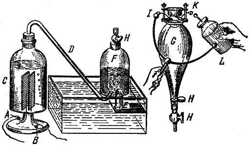
It is certainly something combustible, but not combustible in the way hydrogen is. Hydrogen would not have given you that noise; though the colour of the light, when the thing did burn, was like hydrogen's. This, however, will burn without any contact with the air.
That is why I have chosen this other form of apparatus, in order to point out to you the particular circumstances of this experiment. Instead of an open vessel I have taken a closed one (our battery is so beautifully active that we are even boiling the mercury, and getting everything right — not wrong, but vigorously right); and I am going to show you that this gas, whatever it may be, can burn without air, and in that respect differs from a candle, which cannot burn without air.
Our way of doing it is this. Here is a glass vessel (G) fitted with two platinum wires (I and K) through which I can apply electricity. We can put the vessel on the air pump and exhaust the air; and when the air is out we can bring it here, fasten it onto this jar (F), and let into it the gas that was formed by the action of the voltaic battery on the water — the gas we have produced by changing the water into it. For I may go as far as this and say that we have really, by that experiment, changed the water into that gas. We have not merely altered its condition; we have changed it really and truly into that gaseous substance, and all the water that was decomposed in the experiment is there.
As I screw this vessel (GH) on here (H) and get the tubes well connected, and then open the stopcocks (HHH), watch the level of the water in F and you will see the gas rise. Now I close the stopcocks, having drawn up as much as the vessel will hold; and with the gas safely carried into that chamber, I will pass an electric spark into it from this Leyden jar (L). The vessel, which is now quite clear and bright, will go dim. There will be no sound, because the vessel is strong enough to contain the explosion. [A spark was then passed through the jar, and the explosive mixture was ignited.]
Did you see that brilliant light? If I screw the vessel onto the jar again and open these stopcocks, you will see the gas rise a second time. [The stopcocks were then opened.] Those gases [referring to the gases first collected in the jar, which had just been ignited by the electric spark] have disappeared, as you see: their place is empty, and fresh gas has gone in. Water has been formed out of them. And if we repeat our operation [repeating the last experiment], I shall have another empty space, as you will see by the water rising. I always have an empty vessel after the explosion, because the gas into which the water was resolved by the battery explodes under the influence of the spark and changes back into water; and presently you will see some drops of water trickling down the sides of this upper vessel and collecting at the bottom.
Here we are dealing with water entirely, without any reference to the atmosphere. The water of the candle had the atmosphere helping to produce it; but in this way water can be produced independently of the air. Water, therefore, ought to contain that other substance which the candle takes from the air and which, combining with hydrogen, produces water.
Just now you saw that one end of this battery took hold of the copper and drew it out of the vessel holding the blue solution. It was done by this wire; and surely we may say that if the battery has such power over a metallic solution which we made and unmade, may we not find it possible to split apart the component parts of water too, and put them in this place and that place? Suppose I take the poles — the metallic ends of this battery — and see what happens with the water in this apparatus (Figure 20), where we have set the two ends far apart.
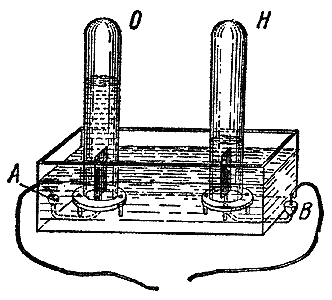
I place one here (at A) and the other there (at B); and I have little shelves with holes in them which I can set over each pole, arranged so that whatever escapes from the two ends of the battery will appear as separate gases — for you saw that the water did not become vaporous but gaseous.
The wires are now in proper connection with the vessel containing the water, and you see the bubbles rising. Let us collect these bubbles and see what they are. Here is a glass cylinder (O): I fill it with water and put it over one end (A) of the pile; and I take another (H) and put it over the other end (B). So now we have a double apparatus, with both places delivering gas. Both these jars will fill with gas. There they go — the one on the right (H) filling very rapidly, the one on the left (O) not so fast. Although I have let some bubbles escape, the action is still going on pretty regularly; and if one jar were not rather smaller than the other you would see that I have twice as much in this one (H) as in that one (O).
Both these gases are colourless; they stand over the water without condensing; they are alike in all things — in all apparent things, I mean. And here we have a chance of examining these bodies and finding out what they are. Their bulk is large and we can easily apply tests to them. I will take this jar (H) first, and I will ask you to be ready to recognise hydrogen.
Think of all its qualities — the light gas which stood well in inverted vessels, burning with a pale flame at the mouth of the jar — and see whether this gas does not answer to all of them. If it is hydrogen it will stay here while I hold this jar upside down. [A light was then applied, and the hydrogen burnt.]
What is there now in the other jar? You know that the two together made an explosive mixture. But what can this be that we find as the other constituent in water, and which must therefore be the substance that made the hydrogen burn? We know the water we put into the vessel consisted of the two things together. We find one of them is hydrogen; what must the other be, which was in the water before the experiment and which we now have by itself?
I am going to put this lighted splinter of wood into the gas. The gas itself will not burn, but it will make the splinter burn. [The lecturer lit the end of the wood and introduced it into the jar of gas.] See how it invigorates the burning of the wood, and makes it burn far better than air would. And now you see by itself that other substance which is contained in water, and which, when the water was formed by the burning of the candle, must have been taken out of the atmosphere. What shall we call it — A, B, or C? Let us call it O — call it "oxygen": it is a very good, distinct-sounding name. This, then, is the oxygen which was present in the water, and which forms so large a part of it.
We shall now begin to understand our experiments and researches more clearly; because once we have examined these things a couple of times we shall soon see why a candle burns in air. When we have analysed water in this way — that is, separated, or electrolysed, its parts out of it — we get two volumes of hydrogen and one volume of the body that burns it. These two are represented for us in the following diagram, with their weights stated as well; and you will find that oxygen is a very heavy body compared with hydrogen. It is the other element in water.
By weight, 1 part of hydrogen to 8 parts of oxygen makes 9 of water
Oxygen . . . . . . 88.9
Hydrogen . . . . . 11.1
------
Water . . . . . . 100.0
Perhaps I had better tell you now how we get this oxygen in quantity, having shown you how we can separate it from water. Oxygen, as you will immediately imagine, exists in the atmosphere; for how else should the candle burn and produce water? Such a thing would be absolutely impossible — chemically impossible — without oxygen.
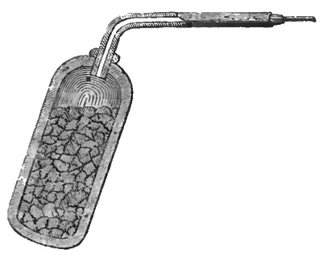
Can we get it out of the air? Well, there are some very complicated and difficult processes by which we can get it from the air; but we have better ones. There is a substance called the black oxide of manganese: a very black-looking mineral, but very useful, and when made red hot it gives out oxygen. Here is an iron bottle which has had some of this substance put into it, with a tube fixed to it, and a fire ready made; and Mr. Anderson will put that retort into the fire, since it is made of iron and can stand the heat.
Here is a salt called chlorate of potash, which is now made in large quantities for bleaching, for chemical and medical uses, and for fireworks and other purposes. I will take some and mix it with some of the oxide of manganese (oxide of copper or oxide of iron would do as well); and if I put these together in a retort, far less than a red heat is enough to drive the oxygen out of the mixture. I am not preparing to make much, because we only want enough for our experiments — though, as you will see in a moment, if I use too small a charge the first portion of gas will be mixed with the air already in the retort, and I shall have to sacrifice it because it will be so diluted with air. The first portion must therefore be thrown away.
You will find in this case that an ordinary spirit lamp is quite enough for me to get the oxygen, so we shall have two processes going at once for preparing it. See how freely the gas is coming over from that small portion of the mixture. We will examine it and see what its properties are.
In this way we are producing, as you will notice, a gas just like the one we had in the experiment with the battery: transparent, not dissolved by water, and showing the ordinary visible properties of the atmosphere. (As this first jar contains the air along with the first portions of oxygen set free during the preparation, we will carry it out of the way and be ready to make our experiments in a regular, dignified manner.)
And since that power of making wood or wax or anything else burn was so marked in the oxygen we got from water by means of the voltaic battery, we may expect to find the same property here. We will try it. You see the burning of a lighted taper in air — and here is its burning in this gas [lowering the taper into the jar]. See how brightly and how beautifully it burns! And you can see something more than that: you will notice that it is a heavy gas, whereas hydrogen would go up like a balloon, or even faster than a balloon when not burdened with the weight of the envelope.
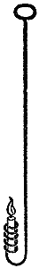
You may easily see that although we got twice as much hydrogen from water by volume as oxygen, it does not follow that we have twice as much by weight — because one is heavy and the other a very light gas. We have means of weighing gases and air; but without stopping to explain that, let me simply tell you what their respective weights are. The weight of a pint of hydrogen is three-quarters of a grain; the weight of the same quantity of oxygen is nearly twelve grains. That is a very great difference. The weight of a cubic foot of hydrogen is one-twelfth of an ounce; the weight of a cubic foot of oxygen is one ounce and a third. And so we might go on to masses of matter that can be weighed in a balance, and reckoned in hundredweights and tons, as you will see almost immediately.
Now, as regards this property of oxygen supporting combustion, which we can compare with air's, I will take a piece of candle to show it to you in a rough way — and the result will be rough. There is our candle burning in air: how will it burn in oxygen? I have a jar of the gas here, and I am going to put it over the candle so that you can compare the action of this gas with that of air. Why, look at it! It looks something like the light you saw at the poles of the voltaic battery. Think how vigorous that action must be! And yet, in all that action, nothing more is produced than what is produced by the burning of the candle in air. We have the same production of water, and exactly the same phenomena, when we use this gas instead of air.
But now that we have some knowledge of this new substance, we can look at it a little more closely, and satisfy ourselves that we have a good general understanding of this part of the candle's product. It is wonderful how great the supporting powers of this substance are as regards burning. Here, for instance, is a lamp which, simple though it is, is the original, I may say, of a great variety of lamps built for all sorts of purposes — for lighthouses, for microscope illumination and other uses. And if it were proposed to make it burn very brightly, you would say, "If a candle burns better in oxygen, will not a lamp do the same?" Why, so it will. Mr. Anderson will give me a tube coming from our oxygen reservoir, and I am going to apply it to this flame, which I will make burn badly on purpose beforehand. There comes the oxygen — what a combustion that makes! But if I shut it off, what becomes of the lamp? [The flow of oxygen was stopped, and the lamp fell back to its former dimness.]
It is wonderful how, by means of oxygen, we get burning accelerated. But it does not only affect the burning of hydrogen, or carbon, or the candle; it exalts all combustions of the ordinary kind. Let us take one that has to do with iron, since you have already seen iron burn a little in the air. Here is a jar of oxygen, and here is a piece of iron wire; but if it were a bar as thick as my wrist, it would burn just the same.
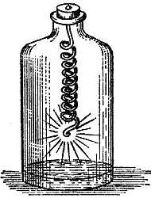
I first fasten a little piece of wood to the iron; then I set the wood on fire and let them both down together into the jar. The wood is alight now, and it burns as wood should burn in oxygen; but it will soon pass its burning on to the iron. The iron is now burning brilliantly, and will go on doing so for a long time. As long as we supply oxygen, so long can we carry on the burning of the iron, until the iron is consumed.
We will put that aside now and take another substance; but we must limit our experiments, since we have not time to spare for all the illustrations you would have a right to if we had more. We will take a piece of sulphur. You know how sulphur burns in air; well, we put it into the oxygen, and you will see that whatever can burn in air can burn far more intensely in oxygen — which may lead you to think that perhaps the atmosphere owes all its power of supporting combustion to this gas. The sulphur is now burning very quietly in the oxygen; but you cannot for a moment mistake the very high and increased action that takes place when it is burnt so, instead of merely in common air.
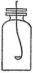
I am now going to show you the burning of another substance — phosphorus. I can do it better for you here than you could do it at home. This is a very combustible substance; and if it is so combustible in air, what would you expect it to be in oxygen? I am going to show it to you not at its fullest intensity, because if I did we should almost blow the apparatus up — even now I may crack the jar, though I do not want to break things carelessly. You see how it burns in air. But what a glorious light it gives when I put it into oxygen! [Introducing the lighted phosphorus into the jar of oxygen.] There you see the solid particles going off which make that burning so brilliantly luminous.
So far we have tested this power of oxygen, and the intense burning it produces, by means of other substances. Now, for a little while longer, we must look at it in relation to hydrogen. You remember that when we let the oxygen and the hydrogen obtained from water mix and burn together, we had a little explosion. You remember, too, that when I burnt oxygen and hydrogen together in a jet, we got very little light but a great deal of heat.
I am now going to set fire to oxygen and hydrogen mixed in the proportions in which they occur in water. Here is a vessel containing one volume of oxygen and two volumes of hydrogen. This mixture is exactly the same in nature as the gas we obtained just now from the voltaic battery. It would be far too much to burn all at once, so I have arranged to blow soap bubbles with it and burn the bubbles, so that we may see by a general experiment or two how this oxygen supports the burning of the hydrogen.
First of all, let us see whether we can blow a bubble. Well, there goes the gas [causing it to issue through a tobacco pipe into some soapsuds]. Here I have a bubble. I am catching them on my hand; and you may perhaps think I am behaving oddly in this experiment, but it is to show you that we must not always trust to noise and sound, but rather to real facts. [Exploding a bubble on the palm of his hand.] I am afraid to fire a bubble at the end of the pipe, because the explosion would run back up into the jar and blow it to pieces.
This oxygen, then, will unite with the hydrogen — as you see by what happens and hear by the sound — with the utmost readiness of action; and all its powers are then taken up in neutralising the qualities of the hydrogen.
So now I think you will see the whole history of water with reference to oxygen and the air, from what has been said. Why does a piece of potassium decompose water? Because it finds oxygen in the water. What is set free when I put it in the water, as I am about to do again? It sets hydrogen free, and the hydrogen burns; but the potassium itself combines with the oxygen. This piece of potassium, in taking the water apart — water, you may say, derived from the burning of the candle — takes away the oxygen which the candle took from the air, and so sets the hydrogen free.
And if I take a piece of ice and put a piece of potassium on it, the beautiful affinities relating oxygen and hydrogen are such that the ice will absolutely set fire to the potassium. I show you this today to enlarge your ideas of these things, and so that you may see how greatly results are modified by circumstances. There is the potassium on the ice, producing a sort of volcanic action.
It will be my business when we next meet, having pointed out these anomalous actions, to show you that we meet with none of these extra and strange effects — none of these strange and injurious actions — when we are burning not merely a candle but gas in our streets, or fuel in our fireplaces, so long as we keep within the laws that Nature has laid down for our guidance.
We have now seen that we can produce hydrogen and oxygen from the water we obtained from the candle. The hydrogen, you know, comes from the candle; the oxygen, you believe, comes from the air. But then you have a right to ask me: "How is it that the air and the oxygen do not burn the candle equally well?" If you remember what happened when I put a jar of oxygen over a piece of candle, you will recall that the burning was of a very different kind from the burning that goes on in air. Now, why is that? It is a very important question, and one I shall try to make you understand: it bears very closely on the nature of the atmosphere, and matters a great deal to us.
We have several tests for oxygen besides the mere burning of bodies. You have seen a candle burnt in oxygen and in air; you have seen phosphorus burnt in air and in oxygen; and you have seen iron filings burnt in oxygen. But we have other tests besides these, and I am going to mention one or two in order to carry your conviction and your experience further.
Here we have a vessel of oxygen. I will show its presence to you: if I take a little spark and put it into that oxygen, you know from the experience you gained last time what will happen. If I put that spark into the jar, it will tell you whether we have oxygen here or not. Yes! We have proved it by burning.
And now here is another test for oxygen, a very curious and useful one. I have two jars full of gas, with a plate between them to stop them mixing. I take the plate away, and the gases creep one into the other. "What happens?" you say. "Together they produce no such burning as we saw with the candle." But see how the presence of oxygen is told by its association with this other substance. What a beautifully coloured gas I have obtained this way, showing me that oxygen is present!
Editor's note: The gas which is thus employed as a test for the presence of oxygen is the binoxide of nitrogen, or nitrous oxide. It is a colourless gas which, when brought into contact with oxygen, unites with it, forming hyponitric acid — the red gas referred to.
We can try this experiment in the same way by mixing common air with the test gas. Here is a jar containing air — such air as the candle would burn in — and here is a bottle containing the test gas. I let them come together over water, and you see the result: the contents of the test bottle flow into the jar of air, and I get exactly the same kind of action as before. That shows me there is oxygen in the air — the very same substance we have already obtained from the water produced by the candle.
But beyond that, how is it that the candle does not burn in air as well as it does in oxygen? We will come to that point at once. Here are two jars filled to the same height with gas; they look alike to the eye, and I really do not know at present which of them holds oxygen and which holds air, although I know they were filled with these gases beforehand. But here is our test gas, and I am going to work with the two jars in order to see whether there is any difference between them in the way they redden it.
I now turn the test gas into one of the jars, and watch what happens. There is reddening, you see; so oxygen is present. Now we will test the other jar — and you see this is not so distinctly red as the first. And, further, this curious thing happens. If I take these two gases and shake them well with water, we absorb the red gas; then, if I put in more of the test gas and shake again, we absorb more; and I can go on as long as there is any oxygen present to produce that effect. Letting in air makes no difference; but the moment I introduce water the red gas disappears. And I can go on this way, putting in more and more of the test gas, until I come to something left behind which will no longer redden with the substance that reddened both the air and the oxygen.
Why is that? You can see in a moment that it is because there is, besides oxygen, something else present, which is left behind. I will let a little more air into the jar; and if it turns red you will know that some of the reddening gas is still there, and that consequently the air left behind was not left for want of the reddening body.
Now you will begin to understand what I am about to say. You saw that when I burnt phosphorus in a jar, and the smoke produced by the phosphorus and the oxygen of the air condensed, it left a good deal of gas unburnt — just as the red gas left something untouched. There was, in fact, this gas left behind, which the phosphorus cannot touch and the reddening gas cannot touch; and this something is not oxygen, and yet is part of the atmosphere.
So that is one way of opening out air into the two things it is composed of: oxygen, which burns our candles, our phosphorus, and anything else; and this other substance, nitrogen, which will not burn them. This other part of the air is much the larger proportion, and it is a very curious body when we come to examine it. It is remarkably curious, and yet you may say it is very uninteresting. It is uninteresting in one respect: it shows no brilliant effects of burning. If I test it with a taper as I do oxygen and hydrogen, it does not burn as hydrogen does, nor does it make the taper burn as oxygen does. Try it as I will, it does neither the one thing nor the other: it will not catch fire; it will not let the taper burn; it puts out the burning of everything. In ordinary circumstances there is nothing that will burn in it. It has no smell; it is not sour; it does not dissolve in water; it is neither an acid nor an alkali; it is as indifferent to all our organs as it is possible for a thing to be.
And you might say, "It is nothing; it is not worth chemical attention; what does it do in the air?" Ah! Then come the beautiful and fine results that an observant science shows us. Suppose that instead of having nitrogen, or nitrogen and oxygen, we had pure oxygen as our atmosphere: what would become of us? You know very well that a piece of iron lit in a jar of oxygen goes on burning to the end. When you see a fire in an iron grate, imagine where the grate would go if the whole atmosphere were oxygen. The grate would burn up more powerfully than the coals — for the iron of the grate is even more combustible than the coal we burn in it. A fire put into the middle of a locomotive would be a fire in a magazine of fuel, if the atmosphere were oxygen.
The nitrogen lowers it down and makes it moderate and useful to us. And then, with all that, it carries away the fumes you have seen produced from the candle, disperses them through the whole of the atmosphere, and takes them off to places where they are wanted to perform a great and glorious purpose of good to man, for the sustenance of plants. So it does a most wonderful work — although on examining it you say, "Why, it is a perfectly indifferent thing."
This nitrogen in its ordinary state is an inactive element. No action short of the most intense electric force, and then only in the most infinitely small degree, can make the nitrogen combine directly with the other element of the atmosphere, or with the things around it. It is perfectly indifferent, and therefore, one may say, a safe substance.
But before I take you on to that result, I must tell you about the atmosphere itself. I have written on this diagram the composition of one hundred parts of atmospheric air:
Bulk Weight
Oxygen . . . . 20 22.3
Nitrogen . . . 80 77.7
----- ------
100 100.0
That is a true analysis of the atmosphere, so far as the quantities of oxygen and nitrogen present are concerned. By our analysis we find that 5 pints of the atmosphere contain only 1 pint of oxygen and 4 pints of nitrogen by bulk. That is our analysis of the atmosphere. It takes all that quantity of nitrogen to bring the oxygen down, so as to be able to supply the candle properly with fuel, and to give us an atmosphere our lungs can breathe healthily and safely. It is just as important to get the oxygen right for us to breathe as it is to get the atmosphere right for the burning of a fire or a candle.
But now for this atmosphere. First of all let me tell you the weight of these gases. A pint of nitrogen weighs 10 2/5 grains, and a cubic foot weighs 1 1/6 ounce. That is the weight of the nitrogen. The oxygen is heavier: a pint of it weighs 11 9/10 grains, and a cubic foot 1 1/3 ounce. A pint of air weighs about 10 7/10 grains, and a cubic foot 1 1/5 ounce.
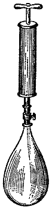
You have asked me several times — and I am very glad you have — "How do you weigh gases?" I will show you; it is very simple and easily done. Here is a balance, and here is a copper bottle, made as light as we can consistent with proper strength, turned very nicely in the lathe and made perfectly airtight, with a stopcock which we can open and shut. At present it is open, so the bottle is full of air. Here is a nicely adjusted balance, in which I think the bottle in its present condition will be balanced by the weight on the other side. And here is a pump by which we can force air into the bottle; with it we will force in a certain number of volumes of air, as measured by the pump. [Twenty measures were pumped in.]
We will shut that in and put it in the balance. See how it sinks: it is much heavier than it was. By what? By the air we have forced into it with the pump. There is not a greater bulk of air, but there is the same bulk of heavier air, because we have forced more air in on top of it.
And so that you may have a fair notion in your minds of how much this air measures, here is a jar full of water. We will open the copper vessel into this jar and let the air return to its former state. All I have to do is screw them tightly together and turn the taps — and there, you see, is the bulk of the twenty pumpfuls of air I forced into the bottle. And to be sure that we have been quite correct in what we have done, we will take the bottle back to the balance; and if it is now counterpoised by the original weight, we shall be quite sure our experiment was made correctly.
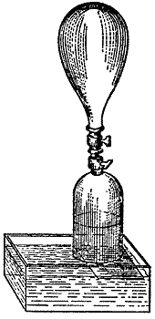
It is balanced. So you see we can find out the weight of the extra volumes of air forced in, and by that means we are able to establish that a cubic foot of air weighs 1 1/5 ounce.
But that small experiment will by no means convey to your mind the whole literal truth of this matter. It is wonderful how it accumulates when you come to larger volumes. This bulk of air [a cubic foot] weighs 1 1/5 ounce. What do you think of the contents of that box up there, which I have had made for the purpose? The air inside that box weighs one pound — a full pound. And I have calculated the weight of the air in this room: you would hardly imagine it, but it is above a ton. So rapidly do the weights mount up; and so important is the presence of the atmosphere, and of the oxygen and nitrogen in it, and the work it does in carrying things to and fro from place to place, and taking bad vapours off to where they will do good instead of harm.
Having given you that little illustration about the weight of air, let me show you some consequences of it. You have a right to them, because you would not understand this much without them.
Do you remember this kind of experiment? Have you ever seen it? Suppose I take a pump rather like the one I had a little while ago for forcing air into the bottle, and set it up so that I can put my hand to it. My hand moves about in the air so easily that it seems to feel nothing, and I can hardly get up enough speed by any movement of my own to be sure that the air resists it much.
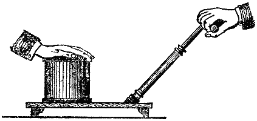
But when I put my hand here [on the air-pump receiver, which was afterwards exhausted], you see what happens. Why is my hand fastened to this place, and why am I able to pull the pump about? And see — how is it that I can hardly get my hand away? Why is this? It is the weight of the air, the weight of the air that is above.
I have another experiment here which I think will explain more about it. When the air is pumped out from underneath the bladder stretched over this glass, you will see the effect in another shape. The top is quite flat at present; but I will make a very little motion with the pump — and now look at it. See how it has gone down; see how it is bent in. You will see the bladder go in more and more, until at last I expect it will be driven in and broken by the force of the atmosphere pressing on it.
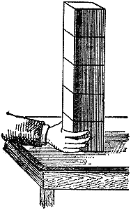
[The bladder at last broke with a loud report.] Now, that was done entirely by the weight of the air pressing on it, and you can easily understand how. The particles piled up in the atmosphere stand on each other, as these five cubes do. You can easily see that four of these five cubes rest on the bottom one, and if I take that away the others will all sink down. So it is with the atmosphere: the air above is held up by the air beneath; and when the air is pumped away from underneath, the change occurs that you saw when I put my hand on the air pump, and that you saw with the bladder — and that you shall see better here.
I have tied a piece of sheet rubber over this jar, and I am now going to take the air out of the inside. If you watch the rubber — which acts as a partition between the air below and the air above — you will see, as I pump, how the pressure shows itself. See where it is going. I can actually put my hand into the jar; and yet this result is caused only by the great and powerful action of the air above. How beautifully it shows this curious circumstance!
Here is something you can have a pull at when I have finished today. It is a little apparatus of two hollow brass hemispheres, closely fitted together, with a pipe and a cock connected to it through which we can exhaust the air inside. Easily as the two halves come apart while the air is left in them, you will see, when we exhaust it presently, that no two of you will have the power to pull them apart. Every square inch of surface in the area of that vessel sustains fifteen pounds by weight, or nearly so, when the air is taken out; and you may try your strength presently and see whether you can overcome that pressure of the atmosphere.
Here is another very pretty thing — the boys' sucker, only refined by the scientist. We young ones have a perfect right to take toys and make them into science, seeing that nowadays we are turning science into toys. Here is a sucker, only made of rubber. If I clap it on the table, you see at once that it holds. Why does it hold? I can slide it about; and yet if I try to pull it up, it seems as if it would pull the table with it. I can move it easily from place to place, but only when I bring it to the edge of the table can I get it off. It is held down by nothing but the pressure of the atmosphere above.
We have a couple of them; and if you take these two and press them together, you will see how firmly they stick. Indeed, we may use them as they are meant to be used — stuck against windows or walls, where they will stay for an evening and serve to hang anything on that you want.
I think, however, that you boys ought to be shown experiments you can make at home; so here is a very pretty one illustrating the pressure of the atmosphere. Here is a tumbler of water. Suppose I asked you to turn that tumbler upside down so that the water should not fall out — and not to hold it in with your hand, but simply by using the pressure of the atmosphere. Could you do it? Take a wine glass, either quite full or half full of water, put a flat card on the top, turn it upside down, and see what becomes of the card and of the water. The air cannot get in, because the water, by its capillary attraction round the edge, keeps it out.
I think this will give you a correct notion of what you might call the materiality of the air; and when I tell you that the box holds a pound of it and this room more than a ton, you will begin to think that air is something very serious.
I will make another experiment to convince you of this positive resistance. There is that beautiful experiment of the popgun, made so well and so easily out of a quill or a tube or anything of that kind. We take a slice of potato, say, or an apple, and take the tube and cut out a pellet, as I have done now, and push it to one end. I have made that end tight; and now I take another piece and put it in. That will confine the air inside the tube perfectly and completely for our purpose; and I shall now find it absolutely impossible, by any force of mine, to drive that little pellet right up to the other. It cannot be done. I may compress the air to a certain extent, but if I go on pressing, then long before it reaches the second pellet the confined air will drive the front one out with a force something like that of gunpowder — for gunpowder depends partly on the same action you see illustrated here.
The other day I saw an experiment which pleased me very much, and which I thought would serve our purpose here. (I ought to have held my tongue for four or five minutes before beginning it, because it depends on my lungs for its success.) By the proper application of air, I expect to be able to drive this egg out of one cup into the other by the force of my breath. But if I fail, it is in a good cause; and I do not promise success, because I have been talking more than I should have to make the experiment succeed.
[The lecturer here tried the experiment, and succeeded in blowing the egg from one egg cup to the other.]
You see that the air I blow goes downwards between the egg and the cup and makes a blast under the egg, and is thus able to lift a heavy thing — for a whole egg is a very heavy thing for air to lift. If you want to make the experiment, you had better boil the egg quite hard first, and then with a little care you may very safely try to blow it from one cup to the other.
I have kept you long enough on this property of the weight of air, but there is another thing I should like to mention. You saw the way in which, in the popgun, I was able to drive the second piece of potato half or two-thirds of an inch before the first piece started, by virtue of the elasticity of the air — just as I pressed the particles of air into the copper bottle with the pump. Now, this depends on a wonderful property in air, namely its elasticity, and I should like to give you a good illustration of it.
Take anything that confines air properly, such as this membrane, which can also contract and expand and so give us a measure of the air's elasticity; and confine a certain portion of air in this bladder. Then, if we take the atmosphere off from the outside of it — just as in those other cases we put pressure on — if we take the pressure off, you will see how it goes on expanding and expanding, larger and larger, until it fills the whole of this bell jar. That shows you the wonderful property of air: its elasticity, its compressibility and its expansibility, to an exceedingly large extent — which is very essential for the purposes and services it performs in the economy of creation.
We will now turn to another very important part of our subject, remembering that we have examined the candle in its burning and found that it gives rise to various products. We have the products of soot, of water, and of something else you have not yet examined. We have collected the water but have let the other things go into the air. Let us now examine some of those other products.
Here is an experiment which I think will help you partly in this. We will put our candle there and place a chimney over it, so. I think my candle will go on burning, because the air passage is open at the bottom and at the top. In the first place you see the moisture appearing — you know about that. It is water produced from the candle by the action of the air on its hydrogen. But besides that, something is going out at the top. It is not moisture; it is not water; it is not condensable; and yet, after all, it has very singular properties. You will find that the air coming out of the top of our chimney is nearly enough to blow out the light I am holding to it; and if I set the light fairly against the current, it will blow it right out. You will say that is just as it should be — and I suppose you think it ought to happen, because nitrogen does not support burning and ought to put the candle out, since a candle will not burn in nitrogen.
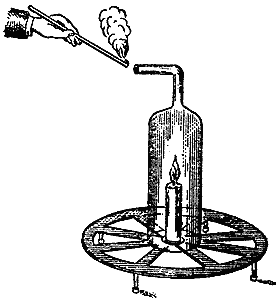
But is there nothing there besides nitrogen? I must anticipate here — that is to say, I must use my own knowledge to give you the means we adopt for finding these things out and examining gases like these. I will take an empty bottle — here is one — and if I hold it over this chimney I shall get the burning of the candle below sending its results up into the bottle. We shall soon find that this bottle contains not merely an air that is bad as regards the burning of a taper put into it, but an air with other properties too.
Let me take a little quicklime and pour some common water onto it — the commonest water will do. I stir it a moment, then pour it onto a piece of filter paper in a funnel, and we shall very quickly have clear water running into the bottle below, as I have here. I have plenty of this water in another bottle; but I should like to use the limewater that was prepared in front of you, so that you may see what its uses are.
If I take some of this beautiful clear limewater and pour it into the jar that has collected the air from the candle, you will see a change come about. Do you see that the water has become quite milky? Notice that this will not happen with air alone. Here is a bottle filled with air; and if I put a little limewater into it, neither the oxygen nor the nitrogen nor anything else in that quantity of air will make any change in the limewater. It stays perfectly clear, and no amount of shaking that quantity of limewater with that quantity of ordinary air will cause any change. But if I take this bottle of limewater and hold it so as to bring the general products of the candle into contact with it, in a very short time we shall have it milky.
There is the chalk — the lime we used in making the limewater, combined with something that came from the candle: that other product which we are in search of, and which I want to tell you about today. It is a substance made visible to us by its action, and that action is not the action of the limewater on the oxygen, nor on the nitrogen, nor on the water itself: it is something new to us from the candle. And this white powder, produced by the limewater and the vapour from the candle, looks very much like whitening or chalk; and when it is examined, it does prove to be exactly the same substance as whitening or chalk.
So we are led to observe the various circumstances of this experiment, and to trace this production of chalk to its several causes, so as to give us true knowledge of the nature of the candle's burning — and to find that the substance issuing from the candle is exactly the same substance that would issue from a retort if I put some chalk into it with a little moisture and made it red hot. You would find exactly the same substance coming from it as from the candle.
But we have a better way of getting this substance, and in greater quantity, so that we can establish what its general characters are. We find this substance in very great abundance in a multitude of cases where you would least expect it. All limestones contain a great deal of this gas which issues from the candle, and which we call carbonic acid — the gas we should now call carbon dioxide. All chalks, all shells, all corals contain a great quantity of this curious air. We find it fixed in these stones; and for that reason Dr. Black called it "fixed air," finding it in fixed things like marble and chalk. He called it fixed air because it lost its quality of air and took on the condition of a solid body.
We can easily get this air out of marble. Here is a jar containing a little muriatic acid, and here is a taper which, if I put it into that jar, will show only the presence of common air. There is pure air right down to the bottom, you see; the jar is full of it. Here is a substance — marble, a very beautiful and superior marble — and if I put these pieces of marble into the jar, a great boiling apparently goes on. That, however, is not steam: it is a gas rising up. And if I now search the jar with a candle, I shall get exactly the same effect on the taper as I got from the air issuing from the end of the chimney over the burning candle. It is exactly the same action, caused by the very same substance that came from the candle; and in this way we can get carbonic acid in great abundance — we have nearly filled the jar already.
We also find that this gas is not only contained in marble. Here is a vessel in which I have put some common whitening — chalk which has been washed in water and freed of its coarser particles, and so supplied to the plasterer as whitening. Here is a large jar containing this whitening and water; and I have here some strong sulphuric acid, which is the acid you might have to use if you made these experiments. (Only, in using this acid with limestone, the body produced is an insoluble substance, whereas muriatic acid produces a soluble one that does not thicken the water so much.)
You may wonder why I take this kind of apparatus to show the experiment. I do it because you may repeat in a small way what I am about to do in a large one. You will get just the same kind of action; and I am evolving in this large jar carbonic acid, exactly the same in its nature and properties as the gas we obtained from the burning of the candle in the atmosphere. And no matter how different the two methods by which we prepare this carbonic acid, you will see, when we get to the end of our subject, that it is all exactly the same, whether prepared in the one way or the other.
Editor's note: Marble is a compound of carbonic acid and lime. The muriatic acid, being the stronger of the two, takes the place of the carbonic acid, which escapes as a gas, the residue forming muriate of lime, or chloride of calcium.
We will now go on to the next experiment about this gas. What is its nature? Here is one of the vessels full, and we will try it by combustion, as we have tried so many other gases. You see it is not combustible, nor does it support combustion. Neither, as we know, does it dissolve much in water, because we collect it over water very easily. Then you know it has an effect on limewater and turns it white; and when it does turn white in that way, it becomes one of the constituents that make carbonate of lime, or limestone.
The next thing I must show you is that it really does dissolve a little in water, and is therefore unlike oxygen and hydrogen in that respect. Here is an apparatus by which we can produce the solution. In the lower part is marble and acid, and in the upper part cold water. The valves are arranged so that the gas can get from one to the other. I will set it going now, and you can see the gas bubbling up through the water as it has been doing all night long; and by this time we shall find we have this substance dissolved in the water. If I take a glass and draw off some of the water, I find it tastes a little acid in the mouth: it is impregnated with carbonic acid. And if I now apply a little limewater to it, that will give us a test of its presence. This water will make the limewater turbid and white, which is proof that carbonic acid is there.
Then it is a very weighty gas — heavier than the atmosphere. I have put their respective weights at the lower part of this table, along with the weights of the other gases we have been examining, for comparison:
Pint Cubic foot
Hydrogen . . . 3/4 grain 1/12 ounce
Oxygen . . . . 11 9/10 " 1 1/2 "
Nitrogen . . . 10 1/10 " 1 1/4 "
Air . . . . . 10 7/16 " 1 3/8 "
Carbonic acid 16 1/3 " 1 9/10 "
A pint of it weighs 16 1/3 grains, and a cubic foot weighs 1 9/10 ounce — almost two ounces. You can see by many experiments that this is a heavy gas. Suppose I take a glass containing nothing but air, and from this vessel of carbonic acid I try to pour a little of the gas into that glass. I wonder whether any has gone in or not. I cannot tell by the look of it, but I can this way [introducing the taper]. Yes, there it is, you see; and if I examined it with limewater I should find it by that test too.
I will take this little bucket and let it down into the well of carbonic acid — and indeed we too often have real wells of carbonic acid. Now, if there is any carbonic acid there, I must have reached it by this time, and it will be in this bucket, which we will examine with a taper. There it is, you see: it is full of carbonic acid.
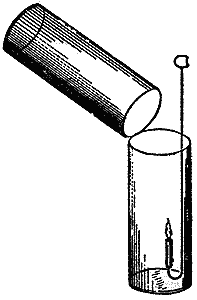
There is another experiment by which I will show you its weight. Here is a jar hung at one end of a balance, and it is now in equipoise; but when I pour this carbonic acid into the jar on the side that now contains air, you will see it sink at once, because of the carbonic acid I have poured in. And now, if I examine this jar with a lighted taper, I shall find that the carbonic acid has fallen into it and that it no longer has any power of supporting combustion. If I blow a soap bubble, which of course will be filled with air, and let it fall into this jar of carbonic acid, it will float.
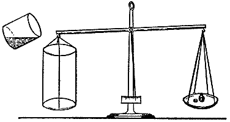
But first of all I will take one of these little balloons filled with air. I am not quite sure where the carbonic acid is; we will just sound the depth and see whereabouts its level lies. There, you see, we have the bladder floating on the carbonic acid; and if I evolve some more of the gas, the bladder will be lifted higher. There it goes — the jar is nearly full. And now I will see whether I can blow a soap bubble and float it the same way. [The lecturer here blew a soap bubble and let it fall into the jar of carbonic acid, where it floated midway.] It is floating, just as the balloon floated, by virtue of the greater weight of the carbonic acid compared with air.
And now, having given you so far the history of carbonic acid — its sources in the candle, and its physical properties and weight — when we next meet I shall show you what it is composed of, and where it gets its elements from.
A lady who honours me by her presence at these lectures has put me under a further obligation by sending me these two candles from Japan, which I presume are made of that substance I mentioned in an earlier lecture. You see they are even more highly ornamented than the French candles, and I suppose, judging by their appearance, that they are candles of luxury. They have a remarkable peculiarity about them, namely a hollow wick — that beautiful feature which Argand introduced into the lamp and made so valuable.
To those who receive such presents from the East I may just say that this and similar materials gradually undergo a change which gives their surface a dull, dead look; but they can easily be restored to their original beauty if the surface is rubbed with a clean cloth or a silk handkerchief, so as to polish away the little roughness. That brings the colours back. I have rubbed one of these candles, and you can see the difference between it and the other, which has not been polished but could be restored by the same process. Notice too that these moulded candles from Japan are made more conical than the moulded candles of this part of the world.
When we last met I told you a good deal about carbonic acid. We found by the limewater test that when the vapour from the top of the candle or lamp was received into bottles and tested with that solution of limewater — whose composition I explained to you, and which you can make for yourselves — we got that white opacity which was in fact calcareous matter, like shells and corals and many of the rocks and minerals of the earth. But I have not yet told you fully and clearly the chemical history of this substance, carbonic acid, as we get it from the candle, and I must now take that subject up again.
We have seen the products and the nature of them as they issue from the candle. We have traced the water to its elements, and now we have to see where the elements of the carbonic acid supplied by the candle come from. A few experiments will show this.
You remember that when a candle burns badly it produces smoke, but that when it is burning well there is no smoke. And you know that the brightness of the candle is due to this smoke becoming ignited. Here is an experiment to prove it: so long as the smoke stays in the flame of the candle and is set glowing, it gives a beautiful light and never appears to us as black particles.
I will light some fuel that is extravagant in its burning — a little turpentine on a sponge will serve our purpose. You see the smoke rising from it and floating off into the air in large quantities; and remember, the carbonic acid we get from the candle comes from smoke like that. To make it plain to you, I will put this turpentine burning on the sponge into a flask where I have plenty of oxygen, the rich part of the atmosphere — and you see now that the smoke is all consumed.
That is the first part of our experiment; and now, what follows? The carbon which you saw flying off from the turpentine flame into the air is now entirely burnt in this oxygen; and we shall find that by this rough and temporary experiment we get exactly the same conclusion and the same result as we had from the burning of the candle. The reason I make the experiment in this way is solely that I may keep the steps of our demonstration so simple that you can never for a moment lose the train of reasoning, if only you pay attention. All the carbon that is burned in oxygen, or in air, comes out as carbonic acid; while the particles that are not so burned show you the second substance in the carbonic acid — namely the carbon: the body that made the flame so bright while there was plenty of air, but which was thrown off in excess when there was not oxygen enough to burn it.
I have also to show you a little more distinctly the history of carbon and oxygen in their union to make carbonic acid. You are better able to understand this now than before, and I have prepared three or four experiments by way of illustration.
This jar is filled with oxygen, and here is some carbon which has been put into a crucible to be made red hot. I keep my jar dry, and I venture to give you a result which is imperfect in some degree, so that I can make the experiment brighter. I am about to put the oxygen and the carbon together. That this is carbon — common charcoal, powdered — you will see from the way it burns in the air [letting some of the red-hot charcoal fall out of the crucible]. Now I am going to burn it in oxygen gas: look at the difference. From a distance it may look to you as though it were burning with a flame, but it is not. Every little piece of charcoal is burning as a spark; and while it burns so it is producing carbonic acid. I particularly want these two or three experiments to point out something I shall dwell on more distinctly by and by: that carbon burns in this way, and not as a flame.
Instead of taking many small particles of carbon to burn, I will take a rather large piece, which will let you see the shape and size and trace the effects very clearly. Here is the jar of oxygen, and here is the piece of charcoal, to which I have fastened a little piece of wood that I can set alight, so as to start the burning — which I could not conveniently do otherwise. You see the charcoal burning now, but not with a flame. (Or if there is a flame, it is the smallest possible one, and I know its cause: the formation of a little carbonic oxide — what is now called carbon monoxide — close on the surface of the carbon.) It goes on burning, you see, slowly producing carbonic acid by the union of this carbon, or charcoal — the terms are equivalent — with the oxygen.
Here is another piece of charcoal, a piece of bark, which has the quality of being blown to pieces, exploding as it burns. By the effect of the heat we shall reduce the lump of carbon to particles that fly off; and still every particle, just like the whole mass, burns in this peculiar way: it burns as a coal, and not as a flame. You see a multitude of little burnings going on, but no flame. I do not know a finer experiment than this for showing that carbon burns with a spark.
Here, then, is carbonic acid formed from its elements. It is produced at once; and if we examined it with limewater you would see that we have the same substance I described to you before. By putting together 6 parts of carbon by weight (whether it comes from the flame of a candle or from powdered charcoal) and 16 parts of oxygen by weight, we get 22 parts of carbonic acid; and, as we saw last time, 22 parts of carbonic acid combined with 28 parts of lime produce common carbonate of lime. If you were to examine an oyster shell and weigh its component parts, you would find that every 50 parts gave 6 of carbon and 16 of oxygen, combined with 28 of lime. However, I do not want to trouble you with these minutiae; it is only the general science of the matter that we can go into now.
See how finely the carbon is dissolving away [pointing to the lump of charcoal burning quietly in the jar of oxygen]. You might say the charcoal is actually dissolving in the air round about it; and if it were perfectly pure charcoal, which we can easily prepare, there would be no residue at all. When we have a perfectly cleansed and purified piece of carbon, no ash is left. The carbon burns as a solid dense body which heat alone cannot change as to its solidity — and yet it passes away into a vapour that never condenses into a solid or a liquid under ordinary circumstances. And what is more curious still is the fact that the oxygen does not change in its bulk by the dissolving of the carbon in it. The bulk is just the same at the end as at the beginning; only it has become carbonic acid.
There is another experiment I must give you before you are fully acquainted with the general nature of carbonic acid. Being a compound body, consisting of carbon and oxygen, carbonic acid is a body we ought to be able to take apart. And so we can. As we did with water, so we can with carbonic acid: take the two parts asunder.
The simplest and quickest way is to act on the carbonic acid with a substance that can draw the oxygen out of it and leave the carbon behind. You remember that I took potassium and put it on water, or on ice, and you saw that it could take the oxygen away from the hydrogen. Now suppose we do something of the same kind here with the carbonic acid.
You know carbonic acid is a heavy gas. I will not test it with limewater, as that would interfere with our later experiments; but I think its heaviness and its power of putting flame out will be enough for our purpose. I introduce a flame into the gas, and you will see whether it goes out. You see the light is extinguished. Indeed, the gas may even put out phosphorus, which, as you know, burns pretty strongly. Here is a piece of phosphorus heated to a high degree. I put it into the gas, and you see the light is put out — though it will take fire again in the air, because there it re-enters into combustion.
Now let me take a piece of potassium, a substance which even at ordinary temperatures can act on carbonic acid — though not enough for our present purpose, because it soon gets covered with a protective coat. But if we warm it up to the burning point in air, as we have a fair right to do, and as we did with the phosphorus, you will see that it can burn in carbonic acid; and if it burns, it will burn by taking oxygen, so that you will see what is left behind. I am going to burn this potassium in the carbonic acid as a proof that oxygen exists in the carbonic acid. [In the preliminary process of heating, the potassium exploded.]
Sometimes we get an awkward piece of potassium that explodes, or something like it, when it burns. I will take another piece; and now that it is heated I put it into the jar, and you see that it burns in the carbonic acid — not as well as it does in air, because in carbonic acid the oxygen is combined; but it does burn, and it takes the oxygen away. If I now put this potassium into water, I find that besides the potash formed (which you need not trouble about) there is a quantity of carbon produced.
I have made the experiment here in a very rough way; but I assure you that if I made it carefully, giving a day to it instead of five minutes, we should get the full proper amount of charcoal left in the spoon, or wherever the potassium had been burnt, so that there could be no doubt about the result. Here, then, is the carbon obtained from the carbonic acid, as a common black substance; so you have the entire proof of the nature of carbonic acid as consisting of carbon and oxygen. And now I may tell you that whenever carbon burns under ordinary circumstances, it produces carbonic acid.
Suppose I take this piece of wood and put it into a bottle with limewater. I might shake that limewater up with the wood and the air as long as I pleased, and it would still stay clear, as you see. But suppose I burn the piece of wood in the air of that bottle. Of course you know I get water. Do I get carbonic acid? [The experiment was performed.] There it is, you see — that is to say, the carbonate of lime which results from carbonic acid; and that carbonic acid must have been formed from the carbon that comes from the wood, or from the candle, or from anything else.
Indeed, you have often tried a very pretty experiment yourselves by which you can see the carbon in wood. If you take a piece of wood, half burn it, and then blow it out, you have carbon left. There are things that do not show carbon in this way. A candle does not show it, but it contains carbon.
Here also is a jar of coal gas, which produces carbonic acid abundantly. You do not see the carbon, but we can soon show it to you. I will light it, and as long as there is any gas in this cylinder it will go on burning. You see no carbon, but you see a flame; and because the flame is bright, it will lead you to guess that there is carbon in it. But I will show it to you by another process. I have some of the same gas in another vessel, mixed with a body that will burn the hydrogen of the gas but will not burn the carbon. I light them with a burning taper, and you see that the hydrogen is consumed but the carbon is not: it is left behind as a dense black smoke. I hope that from these three or four experiments you will learn to see when carbon is present, and to understand what the products of combustion are when gas or any other body is thoroughly burned in the air.
Before we leave the subject of carbon, let us make a few experiments and remarks about its wonderful condition as regards ordinary burning. I have shown you that carbon in burning burns only as a solid body — and yet you see that after it is burnt it ceases to be a solid. There are very few fuels that behave like this. In fact it is only that great source of fuel, the carbonaceous series — the coals, charcoals and woods — that can do it. I do not know that there is any elementary substance besides carbon that burns under these conditions; and if it had not been so, what would have become of us?
Suppose all fuel had been like iron, which when it burns burns into a solid substance. We could not then have such a fire as you have in this fireplace. Here also is another kind of fuel which burns very well — as well as carbon, if not better; so well, indeed, that it takes fire of itself when it is in the air, as you see [breaking a tube full of lead pyrophorus]. This substance is lead, and you see how wonderfully combustible it is. It is very finely divided, and it is like a heap of coals in a fireplace: the air can get to its surface and inside it, and so it burns.
But why does it not burn in that way now, when it is lying in a mass? [emptying the contents of the tube in a heap onto a plate of iron.] Simply because the air cannot get to it. Though it can produce a great heat — the great heat we want in our furnaces and under our boilers — still, what is produced cannot get away from the portion that remains unburnt underneath; and so that portion is kept from coming into contact with the atmosphere and cannot be consumed.
How different that is from carbon. Carbon burns in just the same way as this lead does, and so gives an intense fire in the furnace, or wherever you choose to burn it; but then the body produced by its burning passes away, and the carbon that remains is left clear. I showed you how the carbon went on dissolving in the oxygen, leaving no ash; whereas here [pointing to the heap of pyrophorus] we actually have more ash than fuel, for it is heavier by the amount of oxygen that has united with it.
So you see the difference between carbon and lead, or iron; and it is carbon that gives us so wonderful a result in our use of fuel, whether for light or for heat. If the product of burning carbon went off as a solid body, the room would have been filled with an opaque substance, as it was in the case of the phosphorus; but when carbon burns, everything passes up into the atmosphere. Before the burning it is in a fixed, almost unchangeable condition; afterwards it is in the form of a gas which it is very difficult — though we have succeeded — to produce in a solid or liquid state.
Now I must take you to a very interesting part of our subject: the relation between the burning of a candle and that living kind of burning which goes on inside us. In every one of us there is a living process of combustion going on very like that of a candle, and I must try to make that plain to you. It is not merely true in a poetical sense, the relation of the life of man to a taper; and if you will follow me, I think I can make it clear.
To make the relation very plain I have devised a little apparatus which we can soon build up in front of you. Here is a board with a groove cut in it, and I can close the groove at the top with a little cover. I can then continue the groove as a channel with a glass tube at each end, so that there is a free passage all the way through. Suppose I take a taper or candle — and we can be liberal now in our use of the word "candle," since we understand what it means — and place it in one of the tubes. It will go on burning very well, as you see. You will notice that the air which feeds the flame passes down the tube at one end, goes along the horizontal tube, and rises up the tube at the other end where the taper is placed.
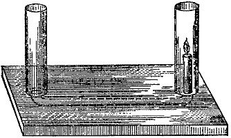
If I stop the opening through which the air enters, I stop the burning, as you see. I cut off the supply of air, and the candle goes out.
But now, what will you think of this? In an earlier experiment I showed you the air going from one burning candle to a second candle. If I took the air coming from another candle and sent it down by some elaborate arrangement into this tube, I should put this burning candle out. But what will you say when I tell you that my breath will put that candle out? I do not mean by blowing at all, but simply that the nature of my breath is such that a candle cannot burn in it.
I will now hold my mouth over the opening, and without blowing the flame in any way I will let no air into the tube except what comes from my mouth. You see the result. I did not blow the candle out; I merely let the air I breathed out pass into the opening, and the light went out for want of oxygen and for no other reason. Something or other — namely my lungs — had taken the oxygen out of the air, and there was none left to supply the candle's burning. I think it is very pretty to see the time it takes before the bad air I breathe into this end of the apparatus reaches the candle. The candle goes on burning at first; but as soon as the air has had time to get there, out it goes.
And now I will show you another experiment, because this is an important part of our science. Here is a jar containing fresh air, as you can tell from the fact that a candle or a gas light burns in it. I close it up for a little while, and by means of a pipe I get my mouth over it so that I can breathe the air in. By holding it over water, in the way you see, I am able to draw this air up (supposing the cork to be quite tight), take it into my lungs, and send it back into the jar.
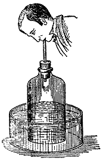
We can then examine it and see the result. You will notice that I first take the air up and then send it back, as you can tell from the rise and fall of the water; and now, by putting a taper into the air, you will see what state it is in from the light going out. Even one breath, you see, has completely spoiled this air, so that it is no use my trying to breathe it a second time.
Now you understand the grounds for objecting to many of the arrangements in the houses of the poorer classes, where the air is breathed over and over again for want of a supply — for want of proper ventilation enough to produce a good result. You see how bad the air becomes from a single breathing, so you can easily understand how essential fresh air is to us.
To carry this a little further, let us see what happens with limewater. Here is a globe holding a little limewater, with its pipes so arranged as to give access to the air inside, so that we can find out the effect of breathed and unbreathed air upon it. I can either draw air in through A, so that the air feeding my lungs goes through the limewater; or I can force the air out of my lungs through the tube B, which goes to the bottom, and so show its effect on the limewater.
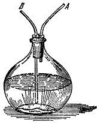
You will notice that however long I draw the outside air through the limewater and into my lungs, I shall produce no effect on the water — it will not make the limewater turbid. But if I send the air from my lungs through the limewater several times in succession, you see how white and milky it becomes, showing the effect that breathed-out air has had on it. And now you begin to know that the atmosphere which we have spoiled by breathing is spoiled by carbonic acid, for here you see it in contact with the limewater.
I have here two bottles, one containing limewater and the other common water, with tubes passing into them and connecting them. The apparatus is very rough, but useful all the same.
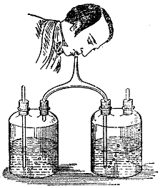
If I take these two bottles, breathing in here and out there, the arrangement of the tubes will stop the air going backwards. The air coming in goes to my mouth and lungs, and on going out passes through the limewater; so I can go on breathing and making an experiment which is very refined in its nature and very good in its results. You will notice that the good air has done nothing to the limewater; in the other case nothing has come to the limewater but my breath — and you see the difference between the two.
Let us now go a little further. What is all this process going on inside us, which we cannot do without either day or night, and which is so provided for by the Author of all things that He has arranged for it to be independent of our will? If we hold back our breathing, as we can to a certain extent, we should destroy ourselves. When we are asleep, the organs of breathing and the parts associated with them still go on with their work — so necessary to us is this process of respiration, this contact of air with the lungs.
I must tell you in the briefest possible way what this process is. We consume food; the food goes through that strange set of vessels and organs inside us and is brought to various parts of the system, particularly the digestive parts. The portion so changed is carried through our lungs by one set of vessels, while the air we breathe in and out is drawn into and thrown out of the lungs by another set; so that the air and the food come close together, separated only by an exceedingly thin surface. The air can thus act upon the blood, producing precisely the same kind of results as we have seen in the case of the candle.
The candle combines with parts of the air, forming carbonic acid and giving off heat. So in the lungs this curious, wonderful change is taking place: the air entering combines with the carbon — not carbon in a free state, but carbon placed ready for action at that moment — makes carbonic acid, and is thrown out into the atmosphere. And so this singular result follows: we may look upon our food as fuel.
Let me take that piece of sugar, which will serve my purpose. It is a compound of carbon, hydrogen and oxygen, like a candle in containing the same elements, though not in the same proportions. The proportions are these:
Sugar
Carbon . . . . . 72
Hydrogen . . . . 11 } together 99 — exactly
Oxygen . . . . . 88 } the proportions of water
This is indeed a very curious thing, and worth remembering: the oxygen and hydrogen are in exactly the proportions that form water, so that sugar may be said to be compounded of 72 parts of carbon and 99 parts of water. And it is the carbon in the sugar that combines with the oxygen brought in by the air in the process of respiration — so making us like candles, producing these actions, this warmth, and far more wonderful results besides, for the sustenance of the system, by a most beautiful and simple process.
To make this more striking still, I will take a little sugar; or, to hasten the experiment, I will use some syrup, which is about three-quarters sugar and a little water. If I put a little oil of vitriol on it, it takes the water away and leaves the carbon as a black mass. [The lecturer mixed the two together.] You see how the carbon is coming out; and before long we shall have a solid mass of charcoal, all of which has come out of sugar. Sugar, as you know, is food; and here we have an absolutely solid lump of carbon where you would never have expected it.
And if I arrange things so as to oxidise the carbon of the sugar, we shall get a much more striking result. Here is sugar, and here I have an oxidiser — a quicker one than the atmosphere; so we shall oxidise this fuel by a process different in form from respiration, though not different in kind. It is the burning of the carbon by contact with the oxygen which the body has supplied to it. If I set this going at once, you will see combustion produced. Just what happens in my lungs — taking in oxygen from another source, namely the atmosphere — takes place here by a more rapid process.
You will be astonished when I tell you what this curious play of carbon comes to. A candle will burn some four, five, six or seven hours. What, then, must be the daily amount of carbon going up into the air as carbonic acid! What a quantity of carbon must go from each of us in breathing! What a wonderful change of carbon must take place under these circumstances of burning, or of breathing!
A man in twenty-four hours converts as much as seven ounces of carbon into carbonic acid; a milk cow will convert seventy ounces, and a horse seventy-nine ounces, solely by the act of breathing. That is, the horse in twenty-four hours burns seventy-nine ounces of charcoal, or carbon, in his organs of respiration, to supply his natural warmth in that time. All warm-blooded animals get their warmth this way, by the conversion of carbon — not carbon in a free state, but in a state of combination.
And what an extraordinary notion this gives us of the alterations going on in our atmosphere. As much as 5,000,000 pounds, or 548 tons, of carbonic acid is formed by respiration in London alone in twenty-four hours. And where does it all go? Up into the air. If the carbon had been like the lead I showed you, or like iron, which in burning produces a solid substance, what would happen? Burning could not go on. As charcoal burns it becomes a vapour and passes off into the atmosphere, which is the great vehicle, the great carrier, for taking it away to other places.
Then what becomes of it? It is wonderful to find that the change produced by breathing, which seems so injurious to us — for we cannot breathe the same air twice over — is the very life and support of the plants and vegetables growing on the surface of the earth. And the same holds below the surface, in the great bodies of water; for fishes and other animals breathe on the same principle, though not exactly by contact with open air.
Fish such as I have here [pointing to a globe of goldfish] breathe by means of the oxygen dissolved out of the air by the water, and they form carbonic acid; and all of them are working away at the one great business of making the animal and vegetable kingdoms serve one another. And all the plants growing on the surface of the earth, like the one I have brought here as an illustration, absorb carbon. These leaves are taking up their carbon from the atmosphere, to which we have given it in the form of carbonic acid, and they are growing and prospering on it. Give them a pure air like ours, and they could not live in it; give them carbon along with other matters, and they live and rejoice.
This piece of wood gets all its carbon, as the trees and plants get theirs, from the atmosphere — which, as we have seen, carries away what is bad for us and at the same time good for them: what is disease to the one being health to the other. So we are made dependent, not merely on our fellow creatures, but on our fellow existers, all Nature being tied together by laws which make one part serve the good of another.
There is another small point I must mention before we draw to a close, one that concerns the whole of these operations, and it is most curious and beautiful to see it clustering about the bodies that concern us — oxygen, hydrogen and carbon in their different states of existence.
I showed you just now some powdered lead which I set burning; and you saw that the moment the fuel was brought to the air it acted, even before it got out of the bottle — the moment the air crept in, it acted. Now, there is a case of chemical affinity, and it is by chemical affinity that all our operations proceed. When we breathe, the same operation goes on within us. When we burn a candle, the attraction of the different parts to one another is going on. Here it is going on in the case of the lead; and it is a beautiful instance of chemical affinity. If the products of the burning rose off from the surface, the lead would take fire and go on burning to the end.
But you remember we have this difference between charcoal and lead: while the lead can start into action at once if air can reach it, the carbon will remain days, weeks, months or years. The manuscripts of Herculaneum were written with a carbon ink, and there they have been for 1,800 years or more, not changed at all by the atmosphere, though they have been in contact with it under all sorts of circumstances.
Now, what is it that makes lead and carbon differ in this respect? It is a striking thing to see that the matter appointed to serve the purpose of fuel waits before it acts. It does not start off burning like the lead and many other things I could show you, but have not cluttered the table with: it waits for action. This waiting is a curious and wonderful thing. Candles — those Japanese candles, for instance — do not start into action at once like the lead or the iron (for iron finely divided does the same thing as lead), but wait there for years, perhaps for ages, without undergoing any change at all.
I have here a supply of coal gas. The jet is giving out the gas, but you see it does not take fire: it comes out into the air, but it waits until it is hot enough before it burns. If I make it hot enough, it takes fire. If I blow it out, the gas that is still issuing waits until the light is put to it again.
It is curious to see how differently substances wait — how some will wait until the temperature is raised a little, and others until it is raised a good deal. I have here a little gunpowder and some guncotton; even these differ in the conditions under which they will burn. The gunpowder is composed of carbon and other substances, which make it highly combustible; the guncotton is another combustible preparation. They are both waiting, but they will start into activity at different degrees of heat, or under different conditions. By applying a heated wire to them we shall see which starts first [touching the guncotton with the hot iron]. You see the guncotton has gone off, but not even the hottest part of the wire is now hot enough to fire the gunpowder.
How beautifully that shows you the difference in the degree to which bodies act in this way! In the one case the substance will wait any length of time until the bodies associated with it are made active by heat; in the other, as in the process of respiration, it waits no time at all. In the lungs, as soon as the air enters, it unites with the carbon; even at the lowest temperature the body can bear short of being frozen, the action begins at once, producing the carbonic acid of respiration. And so all things go on fitly and properly. Thus you see the analogy between respiration and burning is made still more beautiful and striking.
Indeed, all I can say to you at the end of these lectures — for we must come to an end at one time or another — is to express a wish that you may, in your generation, be fit to compare to a candle; that you may, like it, shine as lights to those about you; that, in all your actions, you may justify the beauty of the taper by making your deeds honourable and effectual in the discharge of your duty to your fellow-men.
Editor's note: Lead pyrophorus is made by heating dry tartrate of lead in a glass tube (closed at one end and drawn out to a fine point at the other) until no more vapours are evolved. The open end of the tube is then to be sealed before the blowpipe. When the tube is broken and the contents shaken out into the air, they burn with a red flash.
Delivered before the Royal Institution on Friday, 22 February 1861.
Whether I was to have the honour of appearing before you this evening or not seemed doubtful on one or two points. One of them I will mention immediately; the other may or may not appear in the course of the hour that follows.
The first point is this. When I was tempted to promise this subject for your attention this evening, it was founded on a promise — and a full intention of keeping it — by my friend Deville of Paris, who was to come here and show you a phenomenon in metallurgical chemistry which is not at all common. In that I have been disappointed. His intention was to have fused some thirty or forty pounds of platinum here, and so to have made plain, through my mouth and my description, the principles of a new process in metallurgy for this beautiful, magnificent and valuable metal. But circumstances over which neither he nor I nor anyone else concerned had sufficient control have prevented it; and I learned of it so recently that I could hardly leave my place here to be filled by somebody else, or allow you, who have kindly come to hear what might be said, to go unreceived in the best manner I can manage under the circumstances. I therefore propose to state, as well as I can, the principles on which Monsieur Deville proceeds, by means of drawings and some subordinate or inferior experiments.
The metal platinum, of which you see some very fine specimens on the table, has been known to us for about a hundred years. It has been worked in a beautiful way in this country, in France and elsewhere, and supplied to the customer in ingots like these, or in plates such as we have here, or in masses which by their very fall on the table announce the great weight of the substance — for platinum stands nearly at the head of all substances in that respect. This substance has come to us so far mainly through the science of Dr. Wollaston, whom many of us knew, and it is obtained in great purity and beauty.
It is a very remarkable metal in many ways, besides its known special uses. It usually comes to us in grains. Here is a very fine specimen of native platinum in grains. Here also is a nugget, or ingot; and here are some small pieces gathered out of certain alluvial soils in Brazil, Mexico, California, and the Ural districts of Russia.
It is strange that this metal is almost always found in company with four or five other metals, most curious in their qualities and characteristics. They are called the platiniferous metals; and they are not only always found associated in this way but have other curious relations, which I shall point out by referring to one of the tables behind me.
This substance is always native — always in the metallic state; and the metals it is found with, which are rarely found anywhere else, are palladium, rhodium, iridium, osmium and ruthenium. We have the names in one of the tables, arranged in two columns representing two groups: platinum, iridium and osmium making up one group, and ruthenium, rhodium and palladium the other. Three of them have a chemical equivalent of 98½, and the others an equivalent of about half that number.
Then the metals of the first group have an extreme specific gravity — platinum being in fact the lightest of the three, or as light as the lightest. Osmium has a specific gravity of 21.4 and is the heaviest body in nature; platinum is 21.15, and iridium the same; while the specific gravity of the other three is only about half as much, namely 11.3, 12.1 and 11.8.
Then there is this curious relation, that palladium and iridium are so much alike that you would scarcely know one from the other, although one has only half the weight of the other and only half the equivalent power. It is the same with iridium and rhodium, and with osmium and ruthenium, which are so closely allied that they make pairs, each one separated from its own group.
Then these metals are the most infusible we possess. Osmium is the most difficult to fuse; indeed, I believe it never has been fused, whereas every other metal has. Ruthenium comes next, then iridium, then rhodium, then platinum — so that platinum ranks here as a rather fusible metal, and yet we have long been accustomed to speak of the infusibility of platinum. Then last comes palladium, the most fusible of the whole set. It is a curious thing to see this fine association of physical properties coming out in metals which are grouped together somehow in nature — no doubt by causes related to similar properties in their situation on the surface of the earth, for it is in alluvial soils that these things are found.
Now, as regards this substance, let me tell you briefly how we get it. The process used to be this. The ore I showed you just now was taken and digested in nitro-muriatic acid of a certain strength — aqua regia — and partly converted into a solution, leaving behind certain bodies which I have on the table. The platinum being carefully dissolved in the acids, muriate of ammonia was added to the solution, as I am about to add it here. A yellow precipitate was then thrown down, as you see happening now; and this, carefully washed and cleansed, gave us that body [pointing to a specimen of the chloride of platinum and ammonium], nearly all the other elements having been thrown out.
This substance, when heated, gave us what we call platinum sponge — platinum in the metallic state, so finely divided as to form a kind of heavy mass, or sponge. At the time Dr. Wollaston first sent it out, it was not fusible for the market or in the manufacturers' workshops, because the temperature required was so high and there were no furnaces that could bring the mass into a globule and make the parts cling together.
Most of the metals we get from nature and work in our shops are finally brought into a mass by fusion. I am not aware of any in the arts or sciences except iron for which this is not so. Soft iron we do not bring together by fusion but by a process very like the one that was used for platinum: namely, welding. These divided grains of spongy platinum, having been well washed and sunk in water to exclude the air, and pressed together, and heated, and hammered, and pressed again until they came into a fairly close, dense, compact mass, cohered so well that when the mass was put into a charcoal furnace and raised to a high temperature, the particles — at first infinitely divided, for they had been chemically divided — stuck to one another, each to all the rest, until they made the kind of substance you see here, which will bear rolling and every kind of expansion.
No process other than that has so far been adopted for obtaining this substance from the particles, by solution, precipitation, ignition and welding. It is certainly a very fine thing to see that we can rely so completely on the properties of the various substances we deal with; that by carrying our processes through we can obtain a material like this, which allows of division and extension under a rolling mill — a material of the finest possible kind, its parts held together with no gaps and no porosity, but so continuous that no fluid can pass between them. And, as Dr. Wollaston beautifully showed, a globule of platinum fused by the voltaic battery and the oxyhydrogen blowpipe, when drawn into a wire, was no sounder and no stronger than this wire made by the curious coalescence of the particles through the sticking power they have at high temperatures. This is the process used by Messrs. Johnson and Matthey, to whose great kindness I am indebted for these ingots and for the valuable assistance I have had with the illustrations.
The treatment I have to put before you, however, is of a different kind; and it is in the hope that before long we may have a manufacture of platinum of this sort that I am encouraged to come before you and tell you how far Deville has gone in the matter, and to illustrate the principles on which he proceeds.
I think it only fair that you should see an experiment showing the way we get platinum to adhere. Probably you all know about the welding of iron: you go into the blacksmith's shop and see him put the handle of a poker onto the stem, and by a little management and the application of heat he makes them one. No doubt you have seen him put the iron into the fire and sprinkle a little sand on it. He does not know the science he calls into play when he sprinkles sand over the oxide of iron, but there is fine science there, and he practises it when he gets his weld.
I can show you here this beautiful business of particles sticking together up to the fullest possible intensity of their combination. If you went into Mr. Matthey's workshops and saw them hammering and welding away, you would see the value of the experiment I am about to show you.
Here is some platinum wire. This is a metal which resists the action of acids, resists oxidation by heat, and resists change of any sort; so I can heat it in the open air without any flux. I bend the wire so that the ends cross; I make them hot with the blowpipe; and then, with a tap of a hammer, I shall make them into one piece. Now that the pieces are united I shall have great difficulty in pulling them apart, though they are joined only where the two cylindrical surfaces met. And now that I have succeeded in pulling the wire apart, the break is not at the weld but where the force of the pincers cut it — so the join we made is a complete one. This, then, is the principle of the manufacture and production of platinum in the old way.
The treatment Deville proposes to carry out, and which he has carried out on a rather large scale in connection with the Russian supply of platinum, is entirely by heat, with little or no reference to the use of acids. So that you may know what the problem is, look at this table, which gives the composition of a piece of platinum ore like the one I showed you just now. Wherever it comes from, the composition is just as complicated, though the proportions vary:
Platinum . . . . . . . 76.4
Iridium . . . . . . . 4.3
Rhodium . . . . . . . 0.3
Palladium . . . . . . 1.4
Gold . . . . . . . . . 0.4
Copper . . . . . . . . 4.1
Iron . . . . . . . . . 11.7
Osmide of iridium . . 0.5
Sand . . . . . . . . . 1.4
------
100.5
This refers to the Ural ore. In that state of combination, as the table shows, the iridium and osmium are found combined in crystals, sometimes to the amount of 0.5 per cent and sometimes 3 or 4 per cent. Now, this is what Deville proposes to deal with in the dry way, instead of dealing with it by any acid.
I have here another kind of platinum, and I show it to you for this reason. The Russian government, having large stores of platinum in their territories, obtained it in a metallic state and worked it into coin. The coin I have in my hand is a twelve-silver-rouble piece. The rouble is worth three shillings, so this coin is worth thirty-six shillings. The smaller coin is worth half that sum, and the other half of that again.
The metal, however, is unfit for coinage. When you have the two metals gold and silver used for coinage, there is a little confusion in the value of the two on the market; but when you have three precious metals — for you may call platinum a precious metal — worked into coin, they are certain to run counter to one another. Indeed, it did happen that the price of the platinum coin fixed by the government was such that it was worth while to buy platinum in other countries, coin it, take it into Russia and put it into circulation. The result was that the Russian government stopped the issue.
The composition of this coin is: platinum 97.0, iridium 1.2, rhodium 0.5, palladium 0.25, with a little copper and a little iron. It is, in fact, bad platinum. It scales, and it has an unfitness for commercial use and for the laboratory which properly purified platinum does not have. It wants working over again.
Now, Deville's process depends on three things: intense heat, blowpipe action, and the volatility of certain metals. We know that there are plenty of metals that are volatile; but I think this is the first time it has been proposed to use the volatility of certain metals — gold and palladium, for instance — for the purpose of driving them off and leaving something else behind. He counts a great deal on the volatility of metals which we have not been in the habit of thinking volatile at all, but have rather looked on as fixed. I must try to illustrate these three points with a few experiments.
Perhaps I can best show you what is wanted in the heating of platinum by using that source of heat we have here, which seems almost limitless: the voltaic battery. It is only because of the heat that the voltaic battery affects the platinum at all. By applying the two ends of the battery to this piece of platinum wire, you will see what result we get. You will notice that we can carry this heating agent about wherever we like and deal with it as we please, limiting it any way we choose. I am obliged to handle it carefully, but even that will have an interest for you as you watch the experiment.
Contact is now made. The electric current, when squeezed into thin conducting wires that offer resistance, gives off heat to a large extent; and this is the power we work with. You see the intense glow imparted to the wire at once; and if I applied the heat continuously, the current would melt the wire. As soon as contact is broken the wire goes back to its former appearance; and now that we make contact again, you see the glow as before. [The experiment was repeated several times in rapid succession.]
You can see a line of light, though you can scarcely make out the wire. And now that it has melted with the great heat, if you examine it you will find that it is indeed a set of irregularities from end to end — a string of little spheres, threaded on an axis of platinum running through them. That is the wire Mr. Grove described as being produced at the moment when fusion of the whole mass is beginning.
In the same way, if I take a reasonably thick piece of platinum and subject it to the heat this battery can produce, you will see how brilliant the effect is. I shall put on a pair of spectacles for the experiment, because the voltaic spark has an injurious effect on the eyes if the action is kept up; and it is neither good policy nor bravery to subject any organ to unnecessary danger. At all events, I want to keep the full use of my eyes to the end of the lecture.
You now see the action of the heat on the piece of platinum — heat so great that it breaks the plate on which the drops of metal fall. You can see, then, that we have sources of heat in nature powerful enough to deal with platinum.
Here is an apparatus by which the same thing can be shown. Here is a piece of platinum put into a crucible of carbon made at the end of one pole of the battery, and you will see the brilliant light produced. There is our furnace, and the platinum is rapidly getting hot; and now you can see that it is melted and throwing off little particles. What a magnificent scientific instrument this is. When you look at the result lying on the charcoal, you will see a beautifully fused piece of platinum. It is a fiery globule now, with a surface so bright and smooth and reflective that I cannot tell whether it is transparent or opaque or what. This will give you an idea of what has to be done by any process that claims to deal with thirty, or forty, or fifty pounds of platinum at once.
Let me now tell you briefly what Deville proposes to do. First of all he takes this ore, with its impurities, and mixes it — as he finds essential and best — with its own weight of sulphuret of lead, that is, lead combined with sulphur. Both the lead and the sulphur are wanted; for the iron that is present, as you saw in the table, is one of the most annoying substances in the treatment that you can imagine, because it is not volatile. While the iron remains sticking to the platinum, the platinum will not flow readily; and it cannot be sent away by a high temperature — sent off into the atmosphere so as to leave the platinum behind.
Well, then: a hundred parts of ore and a hundred parts of sulphuret of lead, with about fifty parts of metallic lead, are all mingled together in a crucible. The sulphur of the sulphuret takes the iron, the copper and some of the other metals and impurities and combines with them to form a slag; and as it goes on boiling and oxidising it carries off the iron, so that a great cleansing takes place.
Now, you ought to know that these metals — platinum, iridium and palladium — have a strong affinity for metals like lead and tin, and a great deal depends on that. Very much depends on the platinum throwing out its impurities of iron and so on, by being taken up with the lead that is present in it.
So that you may have some notion of the great power platinum has of combining with other metals, let me point you to a little of the chemist's experience — his bad experience. He knows very well that if he takes a piece of platinum foil and heats a piece of lead on it, or if he takes a piece of platinum foil like the one we have here and heats things on it that have lead in them, his platinum is destroyed.
Here is a piece of platinum; and if I apply the heat of the spirit lamp to it, then because of this little piece of lead which I am putting on it, I shall make a hole in the metal. The heat of the lamp by itself would do the platinum no harm, and neither would other chemical means; but because a little lead is present, and there is an affinity between the two substances, the bodies fuse together at once. You see the hole I have made. It is large enough to put your finger in, and yet the platinum itself, as you saw, was almost infusible except by the voltaic battery.
To show this more strikingly, I have taken pieces of platinum foil, tinfoil and lead foil and rolled them together; and if I apply the blowpipe to them you will have, in effect, a repetition on a larger scale of the experiment you saw just now, when the lead and platinum came together and the one spoiled the other. With the metals laid one on another and folded together, and heat applied, you will see not only that the platinum runs to waste, but that at the moment the platinum and lead combine there is ignition produced — there is a power of sustaining combustion. I have taken a large piece so that you may see the thing on a large scale. You saw the ignition and the explosion that followed, of which we have the results here: the consequence of the chemical affinity between platinum and the metals combined with it, and this is the thing on which Deville founds his first result.
When he has melted these substances and stirred them well up, and so obtained a complete mixture, he throws air onto the surface to burn off all the sulphur from the remaining sulphuret of lead; and at last he gets an ingot of lead with platinum in it — comparatively much lead and little platinum. He gets that in the crucible along with a quantity of slag and other things, which he treats afterwards. It is that platinum-bearing lead which we have to deal with in the rest of the process.
Now let me tell you what he does with it. His first object is to get rid of the lead. He has thrown out all the iron and a number of other things, and he has got the kind of compound shown in the table. He may get it as high as 78 per cent platinum and 22 lead; or 5, or 10, or 15 of platinum to 95, or 90, or 85 of lead, which he calls weak platinum. He then puts it into the kind of vessel you see before you. Suppose we had the mixture here: we should have to make it hot and then throw air onto the surface. The combustible metal — that is, the lead — and everything else that will oxidise are thoroughly oxidised; the litharge flows out in a fused state into a vessel placed to receive it, and the platinum stays behind.
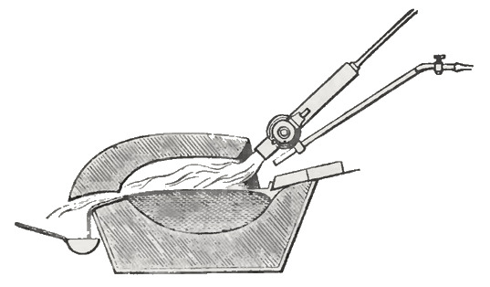
Here is the process Deville adopts for casting off the lead, after he has got the platinum out of the ore. (Having made use of your friend, you get rid of him as quickly as you can.) He gets his heat by using the combination of oxygen and hydrogen, or of carburetted fuel, to make a fire. Here I have a source of coal gas; there I have a source of hydrogen; and here a source of oxygen. Here too is one of the blowpipes Deville uses in his process for working platinum in the way I have described. There are two pipes: one goes to the source of coal gas and the other to the supply of oxygen.
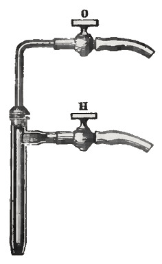
By uniting these we get a flame of such heat that it will melt platinum. Perhaps you can hardly imagine what that heat is without some proof of it; but you will soon see that I really have the power of melting platinum. Here is a piece of platinum foil running like wax under the flame I am bringing to bear on it.
The question, however, is whether we can get heat enough to melt not this small quantity but large masses — many pounds of the metal. And having got heat like this, the next consideration is what vessel he is to use that could hold the platinum when it is so heated, and could bear the effects of the flame. Such vessels are happily well supplied at Paris, and are made of a substance that surrounds Paris: a kind of chalk, called by geologists, I believe, calcaire grossier, which has the property of enduring an extreme degree of heat.
I am now going to get the highest heat we can obtain. First I show you the burning of hydrogen by itself. I have not a large supply, because coal gas is enough for most of our purposes. If I put a piece of lime obtained from this chalk into the gas, you see we get a pretty hot flame, which would burn one's fingers a good deal.
But now let me subject a piece of it to the joint action of oxygen and hydrogen. I do this to show you the value of lime as a material for the furnaces and chambers that have to hold the substances being worked on, and that consequently have to withstand this extreme heat. Here we have the hydrogen and the oxygen, which give the most intense heat obtainable by chemical action; and if I put a piece of lime into the flame we get what is called the limelight. Now, for all the beauty and intensity of the action you see, there is no appreciable wasting of the lime, except by the mechanical force of the current of gases rushing from the jet against it and sweeping away such particles as are not strongly held together. Some people call it "vapour of lime," and it may be so; but there is no other change in the lime than that, under a heat in this highly exalted chemical condition, when almost any other substance would melt at once.
Then, as to the way the heat is applied to the substance. It is all very well for me to take a piece of antimony and fuse it in the flame of a blowpipe. But if I tried this piece in an ordinary lamp flame I should do nothing; if I tried a smaller piece I should do little or nothing; and a smaller piece still, little or nothing. Yet I have here a condition which represents what Deville carries to the highest possible extent, and which we all carry to the highest extent, in the use of the blowpipe.
Suppose I take this piece of antimony. I shall not be able to melt it in the flame of the candle merely by holding it there. And yet, by taking pains, we can even melt a piece of platinum there. This is a preparation I made to prove the fusibility of platinum in a common candle. There is a piece of wire, drawn by Dr. Wollaston's ingenious process, no more than the three-thousandth part of an inch across. He put the wire in the middle of a cylinder of silver and drew both together until the whole compound was exceedingly thin, and then dissolved the silver away with nitric acid. What was left in the centre is a substance I can scarcely see with an eyeglass — but I know it is there, and I can make it visible, as you see, by putting it into the candle, where the heat makes it glow like a spark. I have tried this experiment again and again upstairs in my own room, and have easily fused this platinum wire with a common candle.
So you see we have heat enough in a candle, as in the voltaic battery or in the highly exalted burning of the blowpipe — but we do not supply a continuous source of heat. In the very act of becoming ignited, the heat radiates away so fast that you cannot accumulate enough to fuse the wire, except under the most careful arrangement. So I cannot melt that piece of antimony by simply putting it into the candle; but if I put it on charcoal and drive the fiery current against it, there will be heat enough to melt it.
The beauty of the blowpipe is that it sends hot air — making hot air by the burning of the flame — against the thing to be heated. I have only to hold the antimony in the path of that current, and particle after particle of the current strikes the antimony, and so we get it melted. Now you see it red hot; and I have no doubt it will go on burning if I withdraw it from the flame and keep forcing air onto it. There it is, burning with no heat but that of its own combustion, which I am keeping up by sending air against it. It would go out in a moment if I took the current of air away; but there it burns, and the more air I give it, by this or any other means, the better. So here we have not merely a mighty source of heat, but a means of driving the heat forcibly against substances.
Let me show you another experiment with a piece of iron. It will serve two purposes: showing you what the blowpipe does as a source of heat, and what it does by sending that heat where it is wanted. I have taken iron rather than silver or another metal so that you may see the difference in the action, and so be more interested in the experiment.
Here is our fuel, the coal gas, and here our oxygen. Having thus got my power of heat, I apply it to the iron, which, as you see, soon becomes red hot. It is flowing about now like a globule of melted mercury. But notice that I cannot raise any vapour: it is covered with a coat of melted oxide, and unless I have great power in my blowpipe it is hardly possible to break through it. Now, then, you see these beautiful sparks. You have not only a beautiful kind of burning, but you can see that the iron is being driven off — not producing smoke, but burning in a fixed condition. How different this is from the action of some other metals; that piece of antimony, for instance, which we saw just now throwing off abundant fumes.
We can of course burn this iron away by giving it plenty of air; but with the bodies Deville wants to expose to this intense heat he has no such means. The gas itself must have power enough to drive off the slag that forms on the surface of the metal, and power to strike the platinum so as to get the full contact he wants for the fusion to take place. So here we see the means he resorts to: oxygen, and either coal gas or water gas or pure hydrogen for producing the heat, and the blowpipe for driving the heated current onto the metals.
Editor's note: Water gas is formed by passing vapour of water over red-hot charcoal or coke. It is a mixture of hydrogen and carbonic oxide, each of which is an inflammable gas.
I have two or three rough drawings here of the kind of furnaces he uses. They are larger, though, than his actual furnaces. Even the furnace in which he carries out that most serious operation of fusing fifty pounds of platinum at once is not much more than half the size of the drawing. It is made of a piece of lime below and a piece of lime above. You see how beautifully lime withstands heat without changing shape; and you may have thought how beautifully it prevents the heat from being dissipated, by its very poor conducting power.
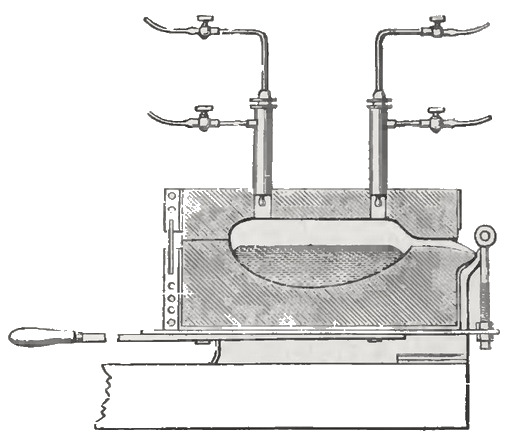
While the front of the lime you saw here was glowing so fiercely, I could at any moment touch the back of it without feeling any discomfort from the heat. So by having a chamber of lime of this sort, he can get a vessel to hold these metals with scarcely any loss of heat. He puts the blowpipes through these openings and sends the gases down onto the metals, which gradually melt. Then he puts in more metal through a hole at the top. The products of the burning issue from the opening you see drawn there. If there are strips of platinum, he pushes them in through the mouth from which the heated current is coming, and they get red hot and white hot before they reach the bath of platinum. So he is able to fuse a large body of platinum this way.
When the platinum is melted he takes the top off and pours out from the bottom piece, like a crucible, and makes his cast. This is the furnace by which he fuses his forty or fifty pounds of platinum at once. The metal is raised to a heat no eye can bear. There is no light and shadow, no chiaroscuro there; all is the same intensity of glow. You look in and you cannot see where the metal is or where the lime is; it is all as one.
We have therefore a platform with a handle, turning on an axis which coincides with the gutter formed for pouring the metal; and when everything is known to be ready — judged through dark glasses — the workmen take off the top piece and lift the handle, and the mould being then set in its proper position, he knows that the metal will issue exactly along the line of the axis. No injury has ever come from the use of this plan. You know how carefully one has to carry a vessel of mercury like the one we have here, for fear of turning it over on one side or the other. But if it is a vessel of melted platinum, the very greatest care must be used, because the substance is twice as heavy — and yet no injury has been done to any of the workmen in this operation.
I said that Deville depends on intense heat for carrying off vapour, and this brings me to the point of showing how vapours are carried off. Here is a basin of mercury, which boils easily, as you know, and gives us a chance of observing the facts and principles that are to guide us. Here are two poles of the battery; and if I bring them into contact with the mercury, see what a development of vapour we get. The mercury is flying off rapidly, and I might, if I chose, put the whole company around me in a bath of mercury vapour.
And so, if we take this piece of lead and treat it the same way, it too will give off vapour. Notice the fumes rising from it; and even if it were so far shut off from the air that you could not form any litharge, you would still have those abundant fumes flying off.
I may also take a piece of gold and show you the same thing. Here is a piece of gold, which I put on a clean surface of Paris limestone. Applying the heat of the blowpipe to it, you see how the heat drives the vapour off; and if you look at the stone at the end of the lecture, you will see a purple patch of condensed gold on it. So here is a proof of the volatilisation of gold. It is the same with silver.
You will not be startled if I sometimes use one agent and sometimes another to illustrate a particular point. The volatility of gold and silver is the same thing, whether it is brought about by the voltaic battery or by the blowpipe. [A lump of silver was placed in a charcoal crucible between the poles of a voltaic battery.] Now look at the fumes of silver, and notice the peculiar and beautiful green colour they give.
We shall now show you this same process of boiling the silver, thrown on a screen from the electric lamp in front of you. And while Dr. Tyndall is kindly getting the lamp ready for the purpose, let me tell you that Deville proposes to throw out in this way all the extraneous things I have spoken of, except two — namely iridium and rhodium. It so happens, he says, that iridium and rhodium make the metal more capable of resisting the attacks of acids than platinum is by itself. Alloys are compounded with up to 25 per cent of rhodium and iridium, which increases the chemical inertness of the platinum, and its malleability and other physical properties as well.
[The image of the voltaic discharge through vapour of silver was now thrown onto the screen.] What you have on the screen now is an inverted image of what you saw when we heated the silver before. The fine stream you see around the silver is the discharge of the electric force taking place, giving that glorious green light you see in the ray; and if Dr. Tyndall will open the top of the lamp, you will see the quantity of fumes that come out of the opening, showing you at once the volatility of silver.
I have now finished this imperfect account. It is only an apology for not having brought the process itself before you. I have done the best I could under the circumstances; and I know your kindness well, for if I were not sure that I could trust to it, I would not appear here as often as I have done. The gradual loss of my memory and of my other faculties is making itself painfully evident to me, and every time I appear before you it takes the continued remembrance of your kindness to enable me to get through my task. If I should happen to go on too long, or should fail to do what you might wish, remember that it is you who are to blame, for wishing me to remain. I have wanted to retire, as I think every man ought to do before his faculties become impaired; but I must confess that the affection I have for this place, and for those who come to this place, is such that I hardly know when the proper time has come.